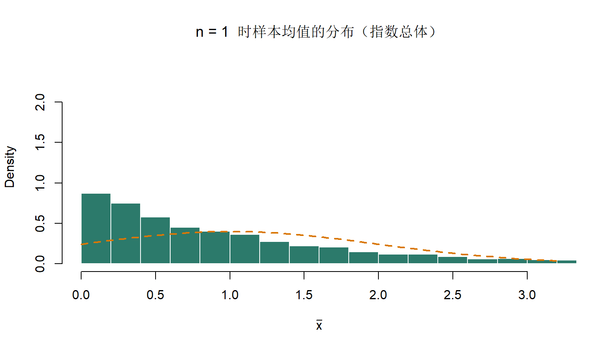
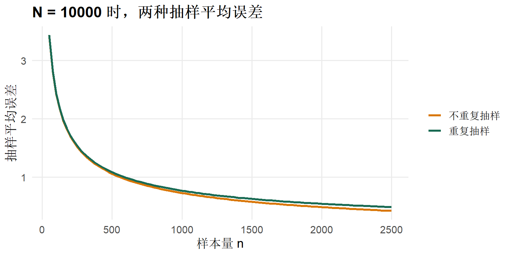
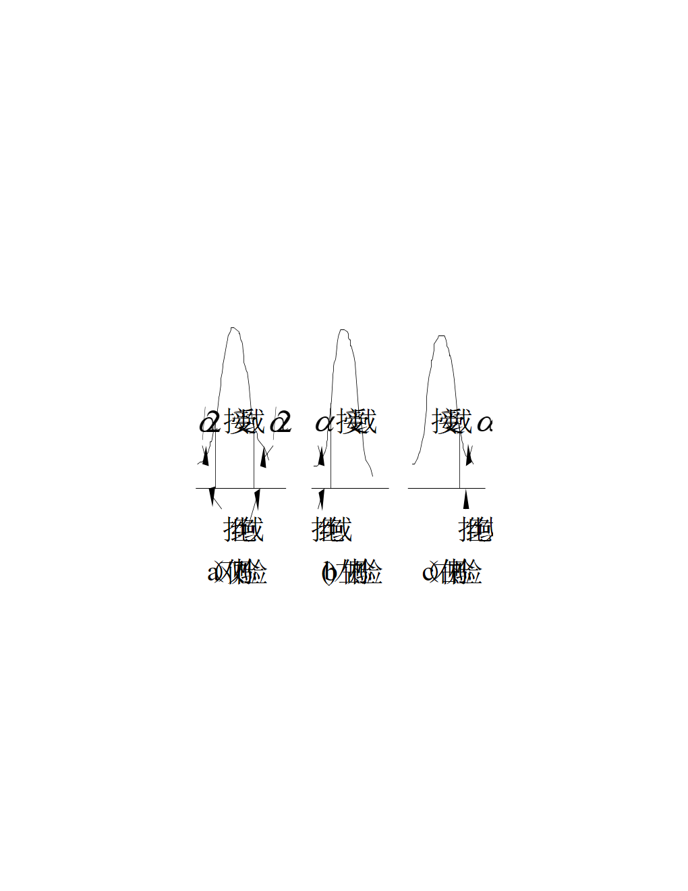
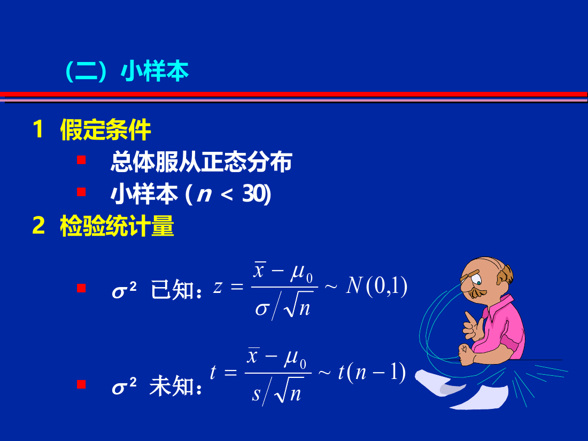

# 《统计学原理》R 课件 · 公共配置 # 每个章节 qmd 通过 ```{r, file="_setup.R"} 方式引入 :: opts_chunk$ set (comment = "#>" ,collapse = TRUE ,out.width = "88%" ,fig.align = "center" ,fig.width = 8 ,fig.height = 5 ,fig.retina = 2 ,dev.args = list (family = "sans" )# 中文友好的 ggplot 主题 if (requireNamespace ("ggplot2" , quietly = TRUE )) {:: theme_set (:: theme_minimal (base_size = 14 ) + :: theme (plot.title = ggplot2:: element_text (face = "bold" ),panel.grid.minor = ggplot2:: element_blank ()# 讲义用统一调色板 <- c ("#1a6b54" , "#d97706" , "#2563eb" , "#c2410c" , "#7c3aed" , "#0891b2" )
第一节 抽样调查的基本问题
本节先明确总体、个体、样本等基础概念与抽样估计的含义，再介绍抽样调查的特点、优点及适用范围，然后辨析总体的三个层次与抽样框（v3 新增），最后给出全及总体与抽样总体、总体指标与样本指标、重复与不重复抽样，以及样本可能数目的计算。
总体、个体与样本
抽样调查涉及四个基础概念：
总体（Population） ：调查研究的事物或现象的全体；个体（Item unit） ：组成总体的每个元素；样本（Sample） ：从总体中所抽取的部分个体；样本容量（Sample size） ：样本中所含个体的数量。
可结合实例理解这四个概念：总体是我们研究对象的全体，个体是其组成元素，样本是从总体中抽出用于观察的部分个体，而样本容量则刻画样本规模的大小。
抽样调查的优点及适用范围
1. 优点——多快好省。 抽样调查具有”多、快、好、省”四大优点，即调查单位多、取得资料快、质量好、节省人力物力财力。
2. 适用范围。 抽样调查适用于以下四种情况：
（1）不可能或不当进行全面调查的情况；
（2）不必要进行全面调查的情况；
（3）对全面调查进行补充或修正；
（4）对资料要求时效性很强的情况。
全及总体和抽样总体
1. 全及总体 ：全及总体也叫母体，简称总体，是指抽样中被调查对象全部单位构成的整体。总体单位数用 \(N\) 表示。
2. 抽样总体 ：抽样总体简称样本，又称子样，是指在全及总体中按随机原则抽取的部分单位构成的集合。样本单位数用 \(n\) 表示。当 \(n \geq 30\) 时为大样本，当 \(n < 30\) 时为小样本。
总体三层次与抽样框（v3 新增）
抽样调查的第一个问题不是”怎么抽”，而是”从哪里抽”——这要求把笼统的”总体”细分为可操作的层次。
1. 连环追问：什么叫”中国所有家庭户”？ 设计一项全国性家庭调查，方案上写”总体为中国所有家庭户”，执行时立刻遭遇一连串追问：什么叫”所有”——台湾算不算？香港和澳门算不算？是”住在中国”的，还是”有中国户籍”的？住在中国的外国人算不算？长期出国却依然有中国户籍的人算不算？什么叫”家庭户”——没有生活在一起、户口在一起，算不算一户？生活在一起、户口不在一起，算不算一户？户口在甲地却很少在甲地居住，算不算甲地的家庭户？每一个追问都要求方案给出明确回答，否则”总体”只是一句无法操作的口号。
2. 总体的三个层次。 按可操作性，总体可细分为三层：
总体三层次与抽样框（v3 新增）（续）
目标总体（简称总体） ：研究问题指涉对象的集合体，即研究问题涉及的全部对象。CFPS（中国家庭追踪调查）的总体是”中国所有的家庭户”，CGSS（中国综合社会调查）的总体是”中国所有的个体”。调查总体（又称研究总体、可及总体） ：可操作的研究对象。CFPS 将总体操作化为”二十五个省、市、自治区（有中国户籍、住在一起）的家庭户”——不含港澳台，也不含二十五省之外的人口。抽样总体（即抽样框，又称框总体） ：从研究总体中获得的、实际用于抽取样本的研究对象集合。CFPS 的抽样框是”二十五个省、市、自治区内，在一个地方连续居住六个月或以上的常住户”。
从覆盖面和覆盖的对象数量看，三层逐级收缩：目标总体 ≥ 调查总体 ≥ 抽样框 。每收缩一层，都会有一部分单位被留在框外，这正是调查覆盖性误差的来源。
3. 抽样单位与逐级抽样。 抽样单位是某一次抽样所面对的基本单位，它可以是最终单位，也可以是包含基本单位的单位集合体。CFPS 在抽到家庭户之前，还要先抽样本区县、再抽样本村居——每一次抽样面对的基本单位就是该阶段的抽样单位：从 25 个省市自治区抽取 160 个区县样本，从 160 个区县样本中抽取 640 个村居样本，再从 640 个村居样本中抽取 16000 个家庭户样本。
4. 抽样框的常见缺陷。 理想的抽样框应与调查总体完全一致，实际中常见四类缺陷：
总体三层次与抽样框（v3 新增）（续）
欠覆盖（覆盖不足）
属于总体的单位未列入抽样框
界定总体为”参加高考的高中毕业生”，却把复读并参加了高考的学生排除在抽样范围之外
过覆盖（混入异质单位）
抽样框包含了不属于总体的单位
把自愿或因其他原因未参加高考的毕业生也纳入抽样范围
重复登记
同一单位在框中出现多次，入样概率被抬高
同一学生出现在两份报名名单中
空白条目
框中条目已无对应单位
电话号码簿中已注销、空置的号码
过覆盖与欠覆盖统称覆盖性误差 ，覆盖过度与覆盖不足都会导致误差；而某类人群一旦不在抽样框内，被选机会就完全没有了，由此造成选择性偏差 。因此，方案设计阶段的功夫，一半花在”把框做对”上。
总体指标
设总体中 \(N\) 个总体单位某项标志的标志值分别为 \(X_1, X_2, \cdots, X_N\) ，则可计算下列总体指标。
（1）总体平均数（总体均值）。 简单式（未分组资料）：
\[\overline{X} = \frac{\sum_{i=1}^{N} X_i}{N}\]
或加权式（分组资料）：
\[\overline{X} = \frac{\sum_{i=1}^{N} X_i f_i}{\sum_{i=1}^{N} f_i}\]
式中 \(f_i\) 为各组的频数（权数）。总体平均数是描述总体集中趋势的基本指标。
（2）总体数量标志的标准差与方差。 标准差（均方差）是各变量值与其算术平均数离差平方的平均数的平方根，用来测定总体数量标志的变异程度。
未分组资料（简单式）：
\[\sigma = \sqrt{\frac{1}{N}\sum_{i=1}^{N}\left(X_i - \overline{X}\right)^2}\]
分组资料（加权式）：
\[\sigma = \sqrt{\frac{1}{\sum_{i=1}^{N} f_i}\sum_{i=1}^{N}\left(X_i - \overline{X}\right)^2 f_i}\]
方差即标准差的平方。未分组资料：
\[\sigma^2 = \frac{1}{N}\sum_{i=1}^{N}\left(X_i - \overline{X}\right)^2\]
总体指标（续）
分组资料：
\[\sigma^2 = \frac{1}{\sum_{i=1}^{N} f_i}\sum_{i=1}^{N}\left(X_i - \overline{X}\right)^2 f_i\]
式中 \(X_i\) 为各变量值，\(\overline{X}\) 为总体算术平均数，\(N\) 为总体单位数，\(f_i\) 为各组频数（权数）。标准差与方差是应用最广泛的变异度指标，其数值越大，说明总体各单位的标志值差异越大，平均数的代表性越低。
（3）总体成数。 如果研究总体各单位某一标志有而且只有两种标志表现，将其中具有某一标志表现的单位数 \(N_1\) 占总体单位数 \(N\) 的比重 \(N_1/N\) 称为总体成数，同样 \(N_0/N\) 也称为总体成数。即：
\[P = \frac{N_1}{N}, \quad Q = \frac{N_0}{N} = 1 - P\]
总体成数是一种是非标志的平均数 ，是一种特殊的平均比重。由于是非标志的标志表现可取值为 1 和 0，其平均数为：
\[\bar{X} = \frac{\sum xf}{\sum f} = \frac{1 \times N_1 + 0 \times N_0}{N_1 + N_0} = \frac{N_1}{N} = P\]
这说明是非标志的平均数就等于总体成数 \(P\) 。
（4）成数的性质。
总体指标（续）
性质一：成数的平均数是其本身 ，即 \(P = \overline{X}\) ；性质二：总体是非标志的方差等于两个成数的乘积 ，即 \(\sigma^2 = PQ = P(1-P)\) ；性质三：两个成数之和等于 1 ，即 \(P + Q = 1\) 。
（可结合 0-1 变量说明：具有某属性的单位取 1、比例为 P；不具有该属性的单位取 0、比例为 Q=1-P，由此可推出以上三条性质。）
此外，当 P = Q = 0.5 时，两个成数之积有最大值，等于 1/4 。设成数为 P，其交替标志对应的成数为 Q = 1 - P，则两个成数之积为 P·Q = P(1-P)。由于 P + Q = 1 为定值，当且仅当 P = Q = 0.5 时，乘积 PQ 取得最大值：
\[PQ = 0.5 \times 0.5 = 0.25 = \frac{1}{4}\]
这一性质说明：成数的方差 P(1-P) 的最大可能值为 1/4（即 0.25），在抽样误差分析中常以此作为成数方差的上界。
样本指标
设样本中 \(n\) 个样本单位某项标志的标志值分别为 \(x_1, x_2, \cdots, x_n\) ，其中具有和不具有某种属性的样本单位数目分别为 \(n_1\) 和 \(n_0\) 个，则可计算下列样本指标。
（1）样本平均数（样本均值）。 简单式（未分组资料）：
\[\bar{x} = \frac{\sum_{i=1}^{n} x_i}{n}\]
加权式（分组资料）：
\[\bar{x} = \frac{\sum_{i=1}^{n} x_i f_i}{\sum_{i=1}^{n} f_i}\]
（2）样本数量标志的标准差与方差。 样本标准差（未分组资料）：
\[s = \sqrt{\frac{1}{n-1}\sum_{i=1}^{n}\left(x_i - \bar{x}\right)^2}\]
或（分组资料）：
\[s = \sqrt{\frac{1}{\sum_{i=1}^{n}f_i - 1}\sum_{i=1}^{n}\left(x_i - \bar{x}\right)^2 f_i}\]
样本方差（未分组资料）：
\[s^2 = \frac{1}{n-1}\sum_{i=1}^{n}\left(x_i - \bar{x}\right)^2\]
或（分组资料）：
样本指标（续）
\[s^2 = \frac{1}{\sum_{i=1}^{n}f_i - 1}\sum_{i=1}^{n}\left(x_i - \bar{x}\right)^2 f_i\]
其中分母中的 n−1（或 Σfᵢ−1）为自由度 ，这样计算的样本标准差 \(s\) 为 σ 的无偏估计 ，样本方差 \(s^2\) 为 σ² 的无偏估计 。
注意 ：样本标准差与方差在计算时除以自由度（n−1 或 Σfᵢ−1）而非样本容量，其目的是使样本方差成为总体方差的无偏估计量。
（3）样本成数与是非标志的方差。 样本成数为：
\[p = \frac{n_1}{n}, \quad q = \frac{n_0}{n} = 1 - p\]
样本是非标志的标准差：
\[s_p = \sqrt{\frac{n}{n-1}\,p(1-p)} = \sqrt{\frac{n}{n-1}\,pq}\]
\(s_p\) 是总体标准差 \(\sigma_p\) 的无偏估计。
样本是非标志的方差：
\[s_p^2 = \frac{n}{n-1}\,p(1-p) = \frac{n}{n-1}\,pq\]
\(s_p^2\) 是总体方差 \(\sigma_P^2\) 的无偏估计。
注意 ：与样本均值场合类似，是非标志（0-1 变量）的样本方差用 \(\frac{n}{n-1}\) （而非 \(n\) ）作分母进行修正，从而保证对总体方差的无偏性。
样本指标（续）
记号与口径提示（v3 新增） ：把本目与”总体指标”一目的符号成对排好——总体均值 \(\overline{X}\) （记号 \(\mu\) ）↔︎ 样本均值 \(\bar{x}\) ，总体方差 \(\sigma^2\) ↔︎ 样本方差 \(s^2\) ，总体成数 \(P\) （记号 \(\pi\) ）↔︎ 样本成数 \(p\) ，总体单位数 \(N\) ↔︎ 样本容量 \(n\) ，完整的”参数—统计量记号对照表”见第 1 章。另请注意：本目样本方差、标准差按自由度 \(n-1\) 计算的理由，与第 4 章”总体式（n）与样本式（n−1）双轨说明框”一脉相承——R 的 var()/sd() 与 Excel 的 STDEV.S 默认即 n−1 口径，本章后续区间估计与假设检验的手算公式沿用同一口径。
重复抽样与不重复抽样
（1）重复抽样 又被称为重置抽样 、有放回抽样 。其操作流程为：
抽出个体 → 登记特征 → 放回总体 → 继续抽取
特点：同一总体单位有可能被重复抽中，而且每次抽取都是独立进行。即每次从总体中抽取一个个体并登记其特征后，将该个体放回总体中再进行下一次抽取，因此各次抽取相互独立，同一个单位可能被抽中多次。
（图示说明：本页用流程图展示重复抽样的四个步骤（抽出个体→登记特征→放回总体→继续抽取），帮助学生直观理解有放回抽样的操作顺序。）
（2）不重复抽样 又被称为不重置抽样、不放回抽样 。其抽样过程为：
抽出个体 → 登记特征 → 继续抽取（不放回）
特点：同一总体中每个单位被抽中的机会并不均等；在连续抽取时，每次抽取都不是独立进行。
两种抽样方法的对比意义在于：抽样方法不同——抽样分布不同——样本可能数目不同——抽样误差的计算方法不同。
样本可能数目
从总体 N 个单位中抽取 n 个单位构成样本，样本可能的配合数目取决于抽样方式（是否考虑顺序、是否重复）。
（1）考虑顺序抽样。 不重复抽样（排列数）：
\[A_N^n = N(N-1)(N-2)\cdots\cdots(N-n+1) = \frac{N!}{(N-n)!}\]
重复抽样：
\[B_N^n = N^n\]
（2）不考虑顺序抽样。 不重复抽样（组合数）：
\[C_N^n = \frac{N(N-1)(N-2)\cdots\cdots(N-n+1)}{n!} = \frac{N!}{n!(N-n)!}\]
重复抽样（可重组合）：
\[D_N^n = c_{N+n-1}^n = \frac{(N+n-1)!}{n!(N-1)!}\]
例：样本配合数目的计算。 从总体 A、B、C、D 四个单位中随机抽取 2 个单位进行调查，试计算可能产生的样本配合数目。由于抽样方式分为重复抽样 与不重复抽样 ，样本配合又分为考虑顺序 与不考虑顺序 两种情形，故共有四种组合，样本配合数目各不相同：
第二节 抽样分布
本节先通过一个 N=4、n=2 的全枚举引例直观建立样本均值抽样分布的概念，再给出抽样分布的严格定义、样本均值与样本成数抽样分布的数字特征，最后介绍中心极限定理。
引例：总体 N=4 的样本均值抽样分布（全枚举）
【例】 设一个总体，含有 4 个元素（个体），即总体单位数 N=4。4 个个体分别为 X₁=1、X₂=2、X₃=3、X₄=4。总体的均值、方差及分布如下。
总体均值：
\[\mu = \frac{\sum_{i=1}^{N} X_i}{N} = 2.5\]
总体方差：
\[\sigma^2 = \frac{\sum_{i=1}^{N}(X_i - \mu)^2}{N} = 1.25\]
总体分布为均匀分布，四个取值 1、2、3、4 各自出现的概率均为 0.25（图中概率轴标度为 0.1、0.2、0.3）。该均匀总体是后续构造样本均值抽样分布的基础。
（图示说明：右侧柱状图展示总体分布：取值 1、2、3、4 的概率均为 0.25，呈均匀分布，为推导样本均值抽样分布提供总体背景。）
现从总体中抽取 \(n = 2\) 的简单随机样本，在重复抽样、考虑顺序 的条件下，共有 \(4^2 = 16\) 个样本。所有样本的结果如下表：
所有可能的 \(n = 2\) 的样本（共 16 个）
引例：总体 N=4 的样本均值抽样分布（全枚举）（续）
1 1,1
1,2
1,3
1,4
2 2,1
2,2
2,3
2,4
3 3,1
3,2
3,3
3,4
4 4,1
4,2
4,3
4,4
表中每个单元格对应一个具体样本（如 1,2 表示第一个观察值取 1、第二个观察值取 2），这 16 个等可能样本构成了计算样本均值 \(\bar{x}\) 抽样分布的基础。
计算出各样本的均值如下表，并据此给出样本均值的抽样分布。
16 个样本的均值（x̄）
1
1.0
1.5
2.0
2.5
2
1.5
2.0
2.5
3.0
3
2.0
2.5
3.0
3.5
4
2.5
3.0
3.5
4.0
将 16 个样本均值整理成频率分布（每个样本概率均为 1/16）：
引例：总体 N=4 的样本均值抽样分布（全枚举）（续）
P(x̄)
0.0625
0.125
0.1875
0.25
0.1875
0.125
0.0625
可以看出：样本均值 x̄ 的抽样分布呈对称的单峰形状，中心在 2.5（即总体均值 μ = 2.5），中间取值的概率大、两端取值的概率小，分布比总体分布更集中。
（图示说明：右侧柱状图展示 x̄ 取 1.0～4.0 各值的概率 P(x̄)，直观呈现样本均值抽样分布对称、单峰、集中于总体均值附近的特点。）
所有样本均值的均值和方差。 设从总体中抽取全部可能的样本，共有 M 个（本例 M=16，样本容量 n=2），样本均值为 \(\bar{x}_i\) 。
样本均值的均值（数学期望）：
\[\mu_{\bar{x}}=\frac{\sum_{i=1}^{n}\bar{x}_i}{M}=\frac{1.0+1.5+\cdots+4.0}{16}=2.5=\mu\]
样本均值的方差：
引例：总体 N=4 的样本均值抽样分布（全枚举）（续）
即：均值相同 （\(\mu_{\bar{x}} = \mu = 2.5\) ）；方差变小 （重复抽样下 \(\sigma_{\bar{x}}^2 = \sigma^2/n = 1.25/2 = 0.625\) ，仅为总体方差的一半）；形状变化 （总体分布为均匀的离散分布，而样本均值的抽样分布呈对称的钟形（近似正态），中间取值如 \(\bar{x}=2.5\) 的概率最大）。样本均值的抽样分布保持了与总体相同的均值，但离散程度更小、分布形态更集中且趋于对称，这正是用样本均值估计总体均值具有较高精度的理论基础。
（图示说明：左侧为总体均匀分布条形图，右侧为样本均值抽样分布的对称钟形直方图，两者并列直观展示均值不变、方差减半、形态趋于正态的规律。）
样本均值（成数）抽样分布的数字特征
（1）样本平均数（成数）的抽样分布 指所有可能样本的均值（成数）的概率分布。其数字特征如下：
样本平均数（成数）的平均数等于总体平均数（成数），即 \(E(\bar{x}) = \bar{X}\) 。
样本平均数（成数）的方差与总体方差存在数量关系：
有放回抽样 ：样本平均数（成数）的方差等于总体方差的 1/n：
\[\sigma_{\bar{x}}^2 = \frac{\sigma^2}{n}\]
不放回抽样 ：样本平均数（成数）的方差等于总体方差的 [(N−n)/(N−1)]/n（或 (1−n/N)/n）：
\[\sigma_{\bar{x}}^2 = \frac{\sigma^2}{n} \cdot \frac{N-n}{N-1} = \frac{\sigma^2}{n}\left(1-\frac{n}{N}\right)\]
注意 ：当总体规模很大时，N−1 可用 N 代替，此时修正系数近似为 1−n/N。
（2）均值分布的数学期望和方差。 设总体均值为 \(\mu\) ，总体标准差为 \(\sigma\) ，总体容量为 \(N\) ，样本容量为 \(n\) ：
样本均值（成数）抽样分布的数字特征（续）
（3）成数分布的数学期望和方差。 设总体成数为 P（Q = 1 − P），样本成数为 p = nᵢ/n，样本容量为 n，总体容量为 N：
（1）放回抽样
\(E(p) = E(n_i/n) = P\) \(\sigma_p^2 = PQ/n\) \(\sigma_p = \sqrt{\dfrac{PQ}{n}}\)
（2）不放回抽样
\(E(p) = E(n_i/n) = P\) \(\sigma_p^2 = \dfrac{PQ}{n}\left(\dfrac{N-n}{N-1}\right)\) \(\sigma_p = \sqrt{\dfrac{PQ}{n}\left(\dfrac{N-n}{N-1}\right)}\)
要点说明：无论放回还是不放回抽样，样本成数 p 的数学期望都等于总体成数 P，即 p 是 P 的无偏估计量；放回抽样的方差为 PQ/n，不放回抽样须乘以修正因子 (N−n)/(N−1)，因此不放回抽样的方差和标准差均小于放回抽样。上表中的 \(\sigma_p\) 即成数推断的抽样平均误差 。
中心极限定理
核心结论 ：无论总体呈何种分布，只要存在有限的平均数和方差，则当样本容量 n 足够大时，样本平均数的分布趋于正态分布。
样本平均数的分布，标准化形式：
\[\frac{\bar{x}-\mu}{\sigma/\sqrt{n}} \sim N(0,1)\]
重复抽样下：
\[\bar{x} \sim N(\mu, \sigma^2/n)\]
或考虑有限总体校正（不重复抽样）：
\[\bar{x} \sim N\!\left[\mu, \frac{\sigma^2}{n}\left(\frac{N-n}{N-1}\right)\right]\]
样本比例的分布：
\[\frac{p-P}{\sigma_p} = \frac{p-P}{\sqrt{\dfrac{P(1-P)}{n}}} \sim N(0,1)\]
\[p \sim N\!\left(P, \frac{P(1-P)}{n}\right) \quad \text{或} \quad p \sim N\!\left(P, \frac{P(1-P)}{n}\left(\frac{N-n}{N-1}\right)\right)\]
要点 ：中心极限定理是统计推断的理论基础，它保证了不管总体分布形态如何，大样本下样本均值（及样本比例）都可按正态分布处理，从而可运用正态分布进行区间估计和假设检验。公式中 (N−n)/(N−1) 为不重复抽样的校正因子。
中心极限定理（续）
从图示角度看：设从均值为 μ、方差为 σ² 的一个任意总体中抽取容量为 n 的样本，当 n 充分大时，样本均值的抽样分布近似服从均值为 μ、方差为 σ²/n 的正态分布。关键公式为：
\[\mu_{\bar{x}} = \mu, \qquad \sigma_{\bar{x}} = \frac{\sigma}{\sqrt{n}}\]
当样本容量足够大时（n ≥ 30），样本均值的抽样分布逐渐趋于正态分布，无论总体原本服从什么分布。
（图示说明：示意图对比任意分布总体（粉色曲线）与其样本均值的抽样分布（红色曲线）：后者以 μ 为中心、标准误 σ/√n 变窄且趋于正态，直观演示中心极限定理的收敛过程。）
第三节 抽样误差
本节在抽样分布的基础上讨论抽样误差：先明确抽样误差的概念与种类，给出抽样平均误差的计算方法（平均数与成数），分析影响抽样误差大小的因素，最后介绍抽样极限误差、概率度及二者与概率保证程度之间的关系。
R 实践 · 中心极限定理动画：均值分布如何”变正态”
从一个明显偏斜 的总体（指数分布）中反复抽样，观察样本均值的分布如何随样本容量 n = 1 → 2 → 5 → 30 逐步逼近正态曲线（红色虚线）。
set.seed (2026 )<- 1 # 指数分布总体（右偏） for (n in c (1 , 2 , 5 , 30 , 30 , 30 )) { # 样本容量逐步增大 <- replicate (4000 , mean (rexp (n, rate = lambda))) # 4000 个样本均值 hist (means, breaks = 40 , freq = FALSE , col = "#2c7a6b" , border = "white" ,xlim = c (0 , 3.2 ), ylim = c (0 , 2.4 ),main = bquote ("n =" ~ .(n) ~ " 时样本均值的分布（指数总体）" ),xlab = expression (bar (x)))curve (dnorm (x, 1 , 1 / sqrt (n)), add = TRUE ,col = "#d97706" , lwd = 2 , lty = 2 ) # 理论正态曲线

无论总体如何偏斜，当 n ≥ 30 时样本均值分布已相当接近正态——这就是大样本区间估计使用 z 分布的理论底气。
抽样误差的概念
在遵守随机原则的条件下，不包括登记误差和系统性误差（违反随机原则产生，如有意识多选好的单位）在内的、样本指标代表总体指标而产生的不可避免的误差，称为抽样误差 。
统计误差的分类体系如下：
要点 ：抽样误差是随机抽样固有的、不可避免的误差；登记性误差属于工作性误差，系统性误差（偏差）因违反随机原则而产生，这两类误差都不包括在抽样误差之内。
（图示说明：页面下方用花括号层级示意图展示统计误差的分类体系，帮助学生直观区分登记性误差、系统性误差与抽样误差的从属关系。）
抽样误差的种类
（1）抽样实际误差 ：某一次抽样结果所得到的样本指标值与总体指标值之间的误差。
样本平均数的实际误差：\(\left(\bar{x}-\mu\right)\)
样本成数的实际误差：\(\left(p-P\right)\)
（2）抽样平均误差 ：所有可能出现的样本指标的标准差（样本平均数、样本成数的抽样平均误差）。
样本平均数的抽样平均误差：
\[u=\sqrt{\frac{\sum(\bar{x}-\mu)^2}{\text{样本可能配合数目}}}\]
样本成数的抽样平均误差：
\[u=\sqrt{\frac{\sum(p-P)^2}{\text{样本可能配合数目}}}\]
抽样平均误差：样本平均数的抽样误差
定义 ：抽样平均误差是抽样平均数（或抽样成数）的标准差 。它反映样本平均数（或抽样成数）与总体平均数（或总体成数）之间的平均离差有多大。
由总体抽取容量相同的样本，样本均值和总体均值之间都有离差。由于抽样平均数的平均数等于总体平均数、抽样成数的平均数等于总体成数，因而抽样平均数或抽样成数的标准差实际上就可以反映抽样平均数或抽样成数与总体平均数或总体成数的平均误差程度。抽样估计中以抽样误差作为实际抽样误差的代表值，用以衡量样本的代表性 （抽样误差越小，样本代表性越高）。前节得到的样本均值（成数）的标准差 \(\sigma_{\bar{x}}\) 、\(\sigma_p\) 正是这里的抽样平均误差。
（1）重复抽样 条件下，样本平均数的抽样平均误差为：
\[u_{\bar{x}} = \sqrt{\frac{\sigma^2}{n}} = \frac{\sigma}{\sqrt{n}}\]
即抽样误差与总体标准差 \(\sigma\) 成正比，与样本容量 \(n\) 的平方根成反比。
（2）不重复抽样 条件下，需乘以修正因子，有两种等价表达形式：
\[u_{\bar{x}} = \sqrt{\frac{\sigma^2}{n}\left(\frac{N-n}{N-1}\right)}\]
抽样平均误差：样本平均数的抽样误差（续）
\[u_{\bar{x}} = \sqrt{\frac{\sigma^2}{n}\left(1 - \frac{n}{N}\right)}\]
其中 \(N\) 为总体单位数，\(n\) 为样本容量。当 \(N\) 较大时，\((N-n)/(N-1) \approx 1 - n/N\) ，两种形式近似相等；不重复抽样的误差总是小于（或近似等于）重复抽样的误差。
（3）总体标准差 σ 未知时的解决途径。 在实际抽样调查中，总体标准差 σ 往往是未知的，此时可采用以下三种解决途径：
用过去的调查资料 ；
用经验估计的资料 ；
用样本标准差 S 或方差 S² 代替 σ 或 σ²。
因此，样本平均数的抽样误差又可用下列公式计算。
重复抽样：
\[u_{\bar{x}} = \sqrt{\frac{S^2}{n}} = \frac{S}{\sqrt{n}}\]
不重复抽样：
\[u_{\bar{x}} = \sqrt{\frac{S^2}{n}\left(1 - \frac{n}{N}\right)}\]
即用样本标准差 S 替代总体标准差 σ 后，抽样平均误差的计算公式形式不变，只是将 σ 换为 S。
例题：产品平均重量的抽样平均误差
例 某企业从其生产的 800 件产品中随机抽取 50 件调查，测得平均重量为 220kg，标准差为 30kg，试求产品平均重量的抽样平均误差。
解 ：依题意已知：Ｎ＝800，ｎ＝50，Ｓ＝30kg。
（1）重复抽样条件下：
\[\mu_{\bar{x}} = S/\sqrt{n} = 30/\sqrt{50} = 4.24\text{（公斤）}\]
（2）不重复抽样条件下：
\[\mu_{\bar{x}} = \frac{S}{\sqrt{n}}\sqrt{1-\frac{n}{N}} = \frac{30}{\sqrt{50}}\sqrt{1-\frac{50}{800}} = 4.11\text{（公斤）}\]
要点 ：不重复抽样因含修正因子 \(\sqrt{1-\frac{n}{N}}\) ，其抽样平均误差（4.11 公斤）小于重复抽样的误差（4.24 公斤）。
样本成数的抽样误差
样本成数 p 的抽样平均误差 μ_p 反映样本成数与总体成数 P 之间的平均差异程度，其公式随抽样组织方式不同而不同。
（1）重复抽样 ：
\[\mu_p = \sqrt{\frac{P(1-P)}{n}}\]
（2）不重复抽样 ：
\[\mu_p = \sqrt{\frac{P(1-P)}{n}\left(\frac{N-n}{N-1}\right)} \approx \sqrt{\frac{P(1-P)}{n}\left(1-\frac{n}{N}\right)}\]
不重复抽样时需乘修正因子 (N−n)/(N−1)，当总体单位数 N 较大时可近似为 (1−n/N)（即 1 减抽样比例）。由于修正因子小于 1，不重复抽样的成数抽样误差小于重复抽样。
（3）总体成数 P 和 Q 未知时的解决途径。 当总体成数 P 和 Q 未知时，除了用前述三条途径（过去的调查资料、经验估计资料、样本资料代替）之外，还可用总体方差的最大值 0.25 来代替（因为当 p = 0.5 时，p(1-p) 达到最大值 0.25）。
在实际工作中，最为常用的方法是用样本成数代替总体成数 ，即以样本成数 p 直接代入成数抽样平均误差公式：
重复抽样条件下：
\[\mu_p = \sqrt{\frac{p(1-p)}{n}}\]
不重复抽样条件下：
样本成数的抽样误差（续）
\[\mu_p = \sqrt{\frac{p(1-p)}{n}\left(1 - \frac{n}{N}\right)}\]
其中 p 为样本成数，n 为样本单位数，N 为总体单位数。
例题：产品合格率的抽样平均误差
例 接前例，若又测得 50 件产品中合格品率为 75%，求成数的抽样平均误差。
解 ：依题意已知：ｐ＝75％，Ｎ＝800，ｎ＝50 件。
重复抽样条件下：
\[\mu_p = \sqrt{\frac{p(1-p)}{n}} = \sqrt{\frac{0.75(1-0.75)}{50}} = 6.12\%\]
不重复抽样条件下：
\[\mu_p = \sqrt{\frac{p(1-p)}{n}\left(1-\frac{n}{N}\right)} = \sqrt{\frac{0.75(1-0.75)}{50}\left(1-\frac{50}{800}\right)} = 5.39\%\]
要点 ：成数的抽样平均误差取决于合格品率 p、样本容量 n；不重复抽样还需乘以修正系数 (1 - n/N)，故结果比重复抽样时更小（5.39% < 6.12%）。
影响抽样误差大小的因素
（１）抽样单位数的多少 ：在其它条件不变的情况下，抽样单位数越多，抽样误差就越小；反之，抽样误差则越大。
（２）被研究标志的变异程度 ：在其它条件不变的情况下，总体的标志变异程度越大，抽样误差就越大；反之，抽样误差就越小。
（３）抽样方法 ：抽样的具体方法不同，也会对抽样误差的大小产生影响。数理统计证明：不重复抽样产生的误差比重复抽样小 。
（４）抽样方式 ：抽样误差也受抽样方式（抽样组织形式）的影响。
抽样极限误差与概率度
1. 含义。 抽样极限误差又称允许误差 ，它是调查者根据对抽样推断结果可靠性 的要求所确定的、样本指标与总体指标之间的最大可允许的误差 ，一般用 Δ 表示。
要点归纳：
抽样极限误差是人为规定的，而非计算出来的随机变量；
其大小取决于调查者对推断结果可靠性（可信程度）的要求；
它限定了样本指标与总体指标之间误差的最大允许范围；
常用符号：Δ（Delta）。
2. 计算公式。 概率度 t 的计算公式为：
\[t = \frac{\Delta_x}{\mu_{\bar{x}}} \quad \text{或} \quad t = \frac{\Delta_P}{\mu_P}\]
t 为概率度，由估计要求的可靠程度 F(t) 决定。为保证允许误差在抽样估计中可以实现，用抽样极限误差 除以抽样平均误差 得出的相对数 t，来表示抽样极限误差范围为抽样平均误差的若干倍。
3. 大样本条件下 t 与概率保证程度 F(t) 的对应关系。 在大样本条件下，概率度 t 与相应的概率保证程度 F(t) 存在一一对应关系：给定一个 t 值，就唯一确定了抽样推断的可靠性（概率保证程度）。其中：
\[F(t) = 1 - \alpha\]
即概率保证程度等于 1 减去显著性水平 α。常用 t 值及相应的概率保证程度如下：
抽样极限误差与概率度（续）
1.00
0.6827
1.65
0.9000
1.96
0.9500
2.00
0.9545
2.58
0.9900
3.00
0.9973
要点 ：这几个常用 t 值应当熟记，特别是在区间估计中，最常用的是 t = 1.96（对应 95% 的保证程度）和 t = 2.58（对应 99% 的保证程度）。t 值越大，概率保证程度越高，置信区间也越宽。
F(t)、t、Δ、μ 之间的关系
当样本确定后，抽样平均误差 μ 也就随之确定，此时另外三个量之间存在如下对应关系：
1. 给定概率保证程度 F(t) ：由 F(t) 查表确定概率度 t，再计算极限误差：
\[\Delta = t \cdot \mu\]
2. 给定允许的极限误差 Δ ：先计算概率度：
\[t = \frac{\Delta}{\mu}\]
再由 t 查表确定对应的概率保证程度 F(t)。
小结 ：样本确定 → μ 确定；给定 F(t) 可求 t 与 Δ；给定 Δ 可求 t 与 F(t)。四者构成相互推算的完整链条。
（图示说明：流程示意图展示由样本确定 μ 后，从 F(t) 到 t 再到 Δ 与从 Δ 到 t 再到 F(t) 的两条推算路径，帮助学生理解四者间的逻辑关系。）
第四节 参数估计
本节介绍参数估计的含义、优良标准与两种基本方法（点估计与区间估计），给出区间估计的评价标准与理论依据，并按总体均值（大样本 z 分布、小样本 t 分布）与总体成数分别展开区间估计，配合典型例题，最后说明总体总量指标的区间推算。
参数估计的含义
参数估计 是用样本指标的数值估计相应的总体指标的数值。由于总体指标是表明总体数量特征的参数，所以这种估计也称为参数估计 。
估计的依据：样本指标（统计量）的数值；
估计的对象：相应的总体指标（参数）的数值；
名称由来：因为待估计的总体指标是表明总体数量特征的参数，故称参数估计。
参数估计的优良标准
评价一个估计量是否优良，主要有以下三个标准：
（一）无偏性 ：所有可能的样本指标的平均数等于总体指标。用样本指标估计总体指标，总体上来说是没有偏差的（即估计量的期望值等于被估计的总体参数，E(θ̂) = θ）。
（二）一致性 ：随着样本容量不断增大，样本统计量接近总体参数的可能性越来越大（依概率收敛于总体参数真值）。
（三）有效性 ：用样本指标估计总体指标时，要求作为估计量的方差比其他估计量的方差小（在所有无偏估计量中，方差最小的估计量为有效估计量）。
（图示说明：页面以树状结构图展示”参数估计的优良标准”分为无偏性、一致性、有效性三个分支，帮助学生整体把握本节知识框架。）
由大数定律可知，抽样平均数是总体平均数的一致估计 。所以，样本平均是总体平均的一个无偏、有效且满足一致性要求 的估计量。又因为成数是一个特殊的平均数，所以该结论对成数估计也成立。
点估计
（1）概念。 以样本指标直接估计总体参数：
\[\overline{X} \Leftarrow \overline{x}, \qquad \sigma \Leftarrow s, \qquad P \Leftarrow p\]
即用样本平均数 \(\overline{x}\) 直接估计总体平均数 \(\overline{X}\) ，用样本标准差 \(s\) 直接估计总体标准差 \(\sigma\) ，用样本成数 \(p\) 直接估计总体成数 \(P\) 。
（2）优点 ：简单，具体明确。
（3）缺点 ：无法控制误差，仅适用于对推断的准确程度与可靠程度要求不高的情况。
区间估计的概念与一般形式
定义 ：在一定的概率保证下，用以点估计值为中心的一个区间范围来估计总体参数的估计方法。
引入区间估计的原因：样本指标的分布总是在总体指标的上下波动，正好等于总体参数的可能性很小。为此，可以设计一个区间，使估计结果包括在这个范围内，这个区间叫做置信区间 。
允许误差（极限误差）：
\[\Delta = |\hat{\theta} - \theta|\]
其中 \(\hat{\theta}\) 为点估计值（样本指标），\(\theta\) 为总体参数（真值）。
区间估计的一般形式 ：
\[\theta = \hat{\theta} \pm \Delta\]
其中 \(\theta\) 为总体参数 ，\(\hat{\theta}\) 为估计值 ，\(\Delta\) 为极限误差 。该公式表明：总体参数 \(\theta\) 的区间估计，是以样本统计量（点估计）\(\hat{\theta}\) 为中心，加减极限误差 \(\Delta\) 构成的范围。在数轴上，以样本统计量 \(\hat{\theta}\) 为中心：向左减去 \(\Delta\) 得到置信下限 \(\hat{\theta} - \Delta\) ；向右加上 \(\Delta\) 得到置信上限 \(\hat{\theta} + \Delta\) ；上下限之间的范围即为置信区间 。即区间估计在点估计的基础上，通过极限误差给出了一个可能包含总体参数的区间范围。
区间估计的概念与一般形式（续）
（图示说明：数轴示意图展示了以点估计为中心、由置信下限和置信上限构成的置信区间，直观说明 θ = θ̂ ± Δ 的含义。）
区间估计的评价标准：置信水平与精确度
1）置信水平（置信度、概率保证程度）。 随机区间 \([\hat{\theta}_1,\ \hat{\theta}_2]\) 包含 \(\theta\) 的概率 ：
\[P\{\hat{\theta}_1 \le \theta \le \hat{\theta}_2\}\]
表示为 \((1-\alpha)\) ，其中 \(\alpha\) 为总体参数未在 区间内的比例。置信水平是概率度 \(t\) 的函数，又可记作 \(F(t)\) ；它描述了估计的可靠度，越大越好 。
2）精确度。 随机区间 \([\hat{\theta}_1,\ \hat{\theta}_2]\) 的平均长度 \(E(\hat{\theta}_1,\hat{\theta}_2)\) 描述了估计的准确程度，越小越好 。
估计的准确程度越高（即缩小误差范围），可靠程度越低；反之，准确程度越低，则可靠程度越高。即精确度（区间平均长度）与可靠度（置信度）是一对此消彼长的矛盾，实际中需在两者之间权衡。
区间估计的理论依据：正态分布与 3σ 经验法则
当总体服从正态分布（或大样本情形）时，样本平均数 x̄ 服从正态分布：
\[\bar{x} \sim N(\bar{X},\ \sigma^2/n)\]
即 x̄ 的数学期望等于总体平均数 X̄，方差为总体方差除以样本量 n（标准误为 σ/√n）。以 X̄ 为中心，按标准误 μ_x̄ 的倍数划分区间，样本平均数落在各区间内的概率为：
X̄ ± μ_x̄（1 个标准误）
68.27%
X̄ ± 2μ_x̄（2 个标准误）
95.45%
X̄ ± 3μ_x̄（3 个标准误）
99.73%
要点 ：x̄ 落在 X̄ ± 3μ_x̄ 范围内的概率高达 99.73%，几乎必然发生；这正是区间估计中把握程度（置信水平）取 68.27%、95.45%、99.73%（对应 1、2、3 个标准误）的理论依据。
（图示说明：以 x̄ 为横轴的正态曲线示意图，标出 X̄ ± 1、2、3 个标准误 μ_x̄ 的区间及其对应概率 68.27%、95.45%、99.73%，直观展示样本平均数分布的集中趋势与经验法则。）
置信区间的频率解释
以样本均值的抽样分布为例，设 \(\mu_{\bar{x}}=\mu\) ，\(\sigma_{\bar{x}}\) 为抽样平均误差。在 \(\bar{x}\) 的抽样分布中：中间区域覆盖 \(1-\alpha\) 的概率；左右两侧尾部各占 \(\alpha/2\) 的概率。
频率解释 ：
\((1-\alpha)\) 的样本区间包含了 \(\mu\) （即 \(\mu\) 落在样本区间的概率为 \(1-\alpha\) ）；\(\alpha\) 的样本区间未包含 \(\mu\) （即 \(\mu\) 不在样本区间的概率为 \(\alpha\) ）。
也就是说：若反复抽取多次样本并构造置信区间，约有 \(1-\alpha\) 比例的区间会包含总体均值 \(\mu\) ，其余约 \(\alpha\) 比例的区间则不包含 \(\mu\) 。这就是置信水平的频率意义。
（图示说明：正态抽样分布示意图：以 \(\mu_{\bar{x}}=\mu\) 为中心，中间 1−α 区域、两侧各 α/2 尾部，直观展示置信区间的覆盖概率含义。）
总体均值的区间估计：正态总体且 σ² 已知或非正态大样本
1. 假定条件
总体服从正态分布，且方差（σ²）已知；
如果不是正态分布，可由正态分布来近似（n ≥ 30）。
2. 使用正态分布统计量 z
\[z = \frac{\bar{x} - \mu}{\sigma / \sqrt{n}} \sim N(0,1)\]
3. 总体均值 μ 在 1−α 置信水平下的置信区间为
\[\bar{x} \pm z_{\frac{\alpha}{2}} \frac{\sigma}{\sqrt{n}} \quad \text{或} \quad \bar{x} \pm z_{\frac{\alpha}{2}} \frac{s}{\sqrt{n}} \;(\sigma \text{未知})\]
影响区间宽度的因素
区间估计中，置信区间的宽度受以下三个因素的影响：
（1）总体数据的离散程度 ，用 σ（总体标准差）来测度；
（2）样本容量 n ，由抽样平均误差公式可知：
\[\sigma_{\bar{x}} = \frac{\sigma}{\sqrt{n}}\]
样本容量越大，抽样平均误差越小，区间越窄；
（3）置信水平 (1-α) ，置信水平影响临界值 z 的大小：置信水平越高，z 越大，区间越宽。
例题：工人日平均产量与日总产量的区间估计（不重复抽样）
【例】 某企业生产某种产品的工人有 1000 人，某日采用不重复抽样 从中随机抽取 100 人调查他们的当日产量，要求在 95% 的概率保证程度下，估计该厂全部工人的日平均产量和日总产量 。
100 名工人的日产量分组资料
110～114
112
3
336
588
114～118
116
7
812
700
118～122
120
18
2160
648
122～126
124
23
2852
92
126～130
128
21
2688
84
130～134
132
18
2376
648
134～138
136
6
816
600
138～142
140
4
560
784
合计 —
100
12600
4144
解 ：
第一步：计算样本平均数。
\[\bar{x}=\frac{\sum xf}{\sum f}=\frac{12600}{100}=126(\text{件})\]
例题：工人日平均产量与日总产量的区间估计（不重复抽样）（续）
（按分组资料的标准差公式：\(\sigma = \sqrt{\dfrac{\sum (x-\bar{x})^2 f}{\sum f}} = \sqrt{\dfrac{4144}{100}}\) 。）
第二步：计算样本标准差（采用样本方差公式，自由度为 n−1）。
\[s=\sqrt{\frac{\sum(x-\bar{x})^{2}f}{\sum f-1}}=\sqrt{\frac{4144}{99}}=6.47(\text{件})\]
第三步：计算抽样平均误差（不重复抽样，需乘修正系数 1−n/N）。
\[\mu_{\bar{x}}=\sqrt{\frac{s^{2}}{n}\left(1-\frac{n}{N}\right)}=\sqrt{\frac{6.47^{2}}{100}\left(1-\frac{100}{1000}\right)}=0.614(\text{件})\]
第四步：由概率保证程度 95% 查表得概率度 t = 1.96，计算极限误差：
\[\Delta_{\bar{x}} = t \cdot \mu_{\bar{x}} = 1.96 \times 0.614 = 1.203\text{（件）}\]
则该企业工人人均产量 \(\bar{X}\) 及日总产量 \(N\bar{X}\) 的置信区间为：
\[126 - 1.203 \le \bar{X} \le 126 + 1.203\]
例题：工人日平均产量与日总产量的区间估计（不重复抽样）（续）
\[1000(126 - 1.203) \le N\bar{X} \le 1000(126 + 1.203)\]
结论 ：该企业工人人均产量在 124.797 至 127.203 件之间，其日总产量在 124797 至 127303 件之间，估计的可靠程度为 95%。
总体均值的区间估计：正态总体、方差未知、小样本（t 分布）
1. 假定条件
总体服从正态分布，且方差（σ²）未知；
小样本（n < 30）。
2. 使用 t 分布统计量。 当总体方差未知时，用样本标准差 s 代替 σ，构造统计量：
\[t = \frac{\bar{x} - \mu}{s/\sqrt{n}} \sim t(n-1)\]
即该统计量服从自由度为 n−1 的 t 分布。
3. 置信区间。 总体均值 μ 在 1-α 置信水平下的置信区间为：
\[\bar{x} \pm t_{\alpha/2}\frac{s}{\sqrt{n}}\]
其中 \(t_{\alpha/2}\) 是自由度为 n-1 的 t 分布的 α/2 分位数，\(s/\sqrt{n}\) 为估计的抽样平均误差。
例题：灯泡平均使用寿命的置信区间
【例】 已知某种灯泡的寿命服从正态分布，现从一批灯泡中随机抽取 16 只，测得其使用寿命（小时）如下，建立该批灯泡平均使用寿命 95% 的置信区间。
1510
1520
1480
1500
1450
1480
1510
1520
1480
1490
1530
1510
1460
1460
1470
1470
解 ：已知 \(X \sim N(\mu, \sigma^2)\) ，且 \(\sigma\) 未知，样本量 \(n=16\) ，置信水平 \(1-\alpha = 95\%\) ，查表得 \(t_{\alpha/2} = 2.131\) 。
根据样本数据计算得：
样本均值：\(\bar{x} = \dfrac{1}{16}\sum_{i=1}^{16}x_i = 1490\) （小时）
样本标准差：\(s = 24.77\) （自由度 \(n-1=15\) ）
由于总体方差未知且为小样本，采用 \(t\) 分布构造置信区间：
\[\bar{x} \pm t_{\alpha/2}\,\frac{S}{\sqrt{n}} = 1490 \pm 2.131 \times \frac{24.77}{\sqrt{16}} = 1490 \pm 13.2 = (1476.8,\ 1503.2)\]
例题：灯泡平均使用寿命的置信区间（续）
结论 ：该种灯泡平均使用寿命的置信区间为 1476.8 小时 ～ 1503.2 小时 （置信水平 95%）。
总体成数的区间估计
1. 假定条件 ：大样本条件下，样本成数的抽样分布可以由正态分布来近似。
2. 使用正态分布统计量 z
\[z = \frac{p - P}{\sqrt{\dfrac{p(1-p)}{n}}} \sim N(0,1)\]
3. 总体成数 P 在 1-α 置信水平下的置信区间为
\[p \pm z_{\alpha/2}\sqrt{\frac{p(1-p)}{n}}\]
\[p \pm z_{\alpha/2}\sqrt{\frac{p(1-p)}{n}}\sqrt{\frac{N-n}{N-1}}\]
例题：下岗职工中女性比例的区间估计
【例】 某城市想要估计下岗职工中女性所占的比例，随机地抽取了 100 名下岗职工，其中 65 人为女性职工。试以 95% 的置信水平估计该城市下岗职工中女性比例的置信区间。
解 ：已知条件：\(n=100\) ，\(p=65\%\) ，\(1-\alpha=95\%\) ，\(z_{\alpha/2}=1.96\) 。
总体比例的置信区间公式为：
\[p \pm z_{\alpha/2}\sqrt{\frac{p(1-p)}{n}} = 65\% \pm 1.96 \times \sqrt{\frac{65\%(1-65\%)}{100}} = 65\% \pm 9.35\% = (55.65\%,\ 74.35\%)\]
结论 ：该城市下岗职工中女性比例的置信区间为 55.65%~74.35%。
例题：完成生产定额工人比重及总数的估计（不重复抽样）
【例】 若前例工人日产量在 118 件以上者视为完成了生产定额任务，要求在 95% 的概率保证程度下，估计该厂全部工人中完成定额的工人比重及完成定额的工人总数。
100 名工人的日产量分组资料
110～114
112
3
114～118
116
7
118～122
120
18
122～126
124
23
126～130
128
21
130～134
132
18
134～138
136
6
138～142
140
4
日产量在 118 件及以上（即 118～122 至 138～142 六个组）的工人数视为完成定额的人数，其合计为 \(18+23+21+18+6+4=90\) （人）。
解 ：已知条件：
\[N = 1000,\quad n = 100,\quad n_1 = 90,\quad n_0 = 10,\quad Z = 1.96\]
样本成数：
\[p = \frac{n_1}{n} = \frac{90}{100} = 0.9\]
抽样平均误差（不重复抽样）：
例题：完成生产定额工人比重及总数的估计（不重复抽样）（续）
\[\mu_p = \sqrt{\frac{p(1-p)}{n}\left(1 - \frac{n}{N}\right)} = \sqrt{\frac{0.9 \times 0.1}{100}\left(1 - \frac{100}{1000}\right)} = 0.029\]
允许误差：
\[\Delta_p = Z \cdot \mu_p = 1.96 \times 0.029 = 0.0568\]
则该企业全部工人中完成定额的工人比重 \(P\) 及完成定额的工人总数 \(NP\) 的置信区间为：
\[0.9 - 0.0568 \leq P \leq 0.9 + 0.0568\]
\[1000(0.9 - 0.0568) \leq NP \leq 1000(0.9 + 0.0568)\]
结论 ：该企业工人中完成定额的工人比重在 0.8432 至 0.9568 之间，完成定额的工人总数在 843.2 至 956.8 人之间，估计的可靠程度为 95%。
例题：英语测验平均成绩与 80 分以上比重的区间估计（续）
60 以下
55
10
550
4665.6
60-70
65
20
1300
2691.2
70-80
75
22
1650
56.32
80-90
85
40
3400
2822.4
90-100
95
8
760
2708.48
合计
—
100
7660
12944
① 计算样本指标：
样本平均成绩（加权算术平均数）：
\[\bar{x}=\frac{\sum xf}{\sum f}=\frac{7660}{100}=76.6\]
样本标准差（方差 \(\sigma^2 = \dfrac{12944}{100} = 129.44\) ，标准差 \(\sigma = \sqrt{129.44} \approx 11.38\) ，取 \(s=11.377\) 用于推断）：
\[s=11.377\]
抽样平均误差（重复抽样条件下）：
\[\mu_x=\frac{S}{\sqrt{n}}=\frac{11.377}{\sqrt{100}}=1.1377\]
例题：英语测验平均成绩与 80 分以上比重的区间估计（续）
② 根据给定的 F(t)，查表求 t：给定概率保证程度 F(t) = 95.45%，查正态分布概率表得 \(t = 2\) 。
③ 求出抽样极限误差 Δ 和估计区间的上、下限：
\[\Delta_x = t\mu = 2 \times 1.1377 = 2.2754\]
估计区间下限：
\[\bar{x} - \Delta_x = 76.6 - 2.2754 = 74.32\]
估计区间上限：
\[\bar{x} + \Delta_x = 76.6 + 2.2754 = 78.89\]
结论 ：可以以 95.45% 的概率保证程度估计该校学生考试平均成绩的区间范围是 \(74.32 \le \bar{x} \le 78.89\) 。
（2）估计该校学生成绩在 80 分以上的学生所占的比重的范围。
① 计算样本指标。样本中 80 分以上的学生为 48 人，样本容量为 100，故样本成数：
\[p = \frac{n_1}{n} = \frac{48}{100} = 48\%\]
抽样平均误差：
\[\mu_p = \sqrt{\frac{p(1-p)}{n}} = \sqrt{\frac{0.48(1-0.48)}{100}} = 0.04996\]
② 根据给定的 F（t），查表求 t：F（t）= 95.45%，查表得 t = 2。
③ 求出抽样极限误差 Δ 和估计区间的上、下限：
例题：英语测验平均成绩与 80 分以上比重的区间估计（续）
\[\Delta_p = t\mu_p = 2 \times 0.04996 = 0.09992\]
估计区间下限：
\[p - \Delta_p = 0.48 - 0.09992 = 0.3801\]
估计区间上限：
\[p + \Delta_p = 0.48 + 0.09992 = 0.5799\]
结论 ：以 95.45% 的概率保证程度估计，该校学生成绩在 80 分以上的学生所占的比重的范围在 38.01%—57.99% 之间。
例题：学生月生活费支出的区间估计
【例】 从某校 10000 名学生中随机不重复抽取 100 名进行月生活费支出的抽样调查，得到如下资料。现要求月平均生活费支出的抽样误差不超过 4.57 元，月生活费支出不足 100 元的学生所占比重的抽样误差最大为 8.68%。试对全部学生的月平均生活费支出和全部学生中月生活费支出不足 100 元的学生的比重进行区间估计。
100 名学生月生活费支出标准差计算表
80 以下
70
10
700
-44
1936
19360
80—100
90
20
1800
-24
576
11520
100—120
110
25
2750
-4
16
400
120—140
130
30
3900
16
256
7680
140 以上
150
15
2250
36
1296
19440
合计
—
100
11400
—
—
58400
解 ：
样本月平均生活费支出：
例题：学生月生活费支出的区间估计（续）
\[\bar{x} = \frac{\sum xf}{\sum f} = \frac{11400}{100} = 114(\text{元})\]
样本月生活费支出的方差（自由度 n−1）：
\[s^2 = \frac{\sum(x-\bar{x})^2 f}{\sum f - 1} = \frac{58400}{99} = 584\]
（若按分组资料直接计算，\(\sigma = \sqrt{\dfrac{\sum (x-\bar{x})^2 f}{\sum f}} = \sqrt{\dfrac{58400}{100}} \approx 24.17\) （元）。）
样本成数：
\[p = \frac{10+20}{100} = 30\%\]
抽样平均误差（不重复抽样，修正系数 \(1-\frac{n}{N}\) ）：
\[\mu_{\bar{x}} = \sqrt{\frac{s^2}{n}\left(1-\frac{n}{N}\right)} = \sqrt{\frac{584}{100}\times\left(1-\frac{100}{10000}\right)} = 2.40\text{元}\]
例题：学生月生活费支出的区间估计（续）
\[\mu_p = \sqrt{\frac{p(1-p)}{n}\left(1-\frac{n}{N}\right)} = \sqrt{\frac{0.3\times0.7}{100}\times\left(1-\frac{100}{10000}\right)} = 4.56\%\]
（1）全部学生月生活费支出的估计区间
\[114-4.57 \le \overline{X} \le 114+4.57 \quad\Rightarrow\quad 109.43 \le \overline{X} \le 118.57\]
概率度：
\[t = \frac{\Delta_{\bar{x}}}{\mu_{\bar{x}}} = \frac{4.57}{2.40} = 1.90\]
查正态分布概率积分表的 \(\Phi(t) = 94.26\%\) ，即有 94.26% 的把握程度保证全部学生月生活费支出落在 109.43 元至 118.57 元之间。
（2）全部学生中月生活费不足 100 元的学生所占比重的估计区间
\[30\%-8.68\% \le P \le 30\%+8.68\% \quad\Rightarrow\quad 21.32\% \le P \le 38.68\%\]
概率度：
\[t = \frac{\Delta_{p}}{\mu_{p}} = \frac{8.68\%}{4.56\%} = 1.90\]
例题：学生月生活费支出的区间估计（续）
查正态分布概率积分表的 \(\Phi(t) = 94.26\%\) ，即以 94.26% 的概率保证生活费不足 100 元的学生比重在 21.32% 至 38.68% 之间。
要点 ：均值估计与成数估计的概率度计算方法相同，均为极限误差除以抽样平均误差；本例中两者所得概率度一致（t=1.90），对应相同的把握程度。
总体总量指标的区间推算
区间估计也可以在推算出总体平均数和总体成数的基础上，进一步推算总体总量指标。即：
\[N(\bar{x}-\Delta_{\bar{x}}) \leq N\bar{X} \leq N(\bar{x}+\Delta_{\bar{x}})\]
\[N(p-\Delta_p) \leq NP \leq N(p+\Delta_p)\]
例：全部学生的月生活费支出总额的估计区间
\[10000 \times 109.43 \leq N\bar{X} \leq 10000 \times 118.57 \quad\Rightarrow\quad 1,094,300 \leq N\bar{X} \leq 1,185,700\]
全部学生中月生活费在 100 元以下的学生总数的估计区间
\[10000 \times 21.32\% \leq NP \leq 10000 \times 38.68\% \quad\Rightarrow\quad 2132 \leq NP \leq 3868\]
即：将总体单位数 N 分别乘以平均数的估计区间和成数的估计区间，便可得到总体总量（总额、总数）的置信区间。
第五节 必要样本容量的确定
本节说明必要样本容量的概念，分别就估计总体均值与估计总体成数给出重复抽样和不重复抽样条件下样本容量的计算公式及推导，通过例题演示用法，最后归纳影响样本容量的因素。
R 实践 · 区间估计全流程重算（不重复抽样）
用 R 重算上例（N=10000，n=100，不重复抽样），公式与手算完全一致：
# 100 名学生月生活费支出分组资料（组中值、人数） <- c (70 , 90 , 110 , 130 , 150 )<- c (10 , 20 , 25 , 30 , 15 )<- 10000 ; n <- sum (f)<- weighted.mean (x, f) # 样本均值 114 <- sum (f * (x - xbar)^ 2 ) / (n - 1 ) # 样本方差 <- sqrt (s2 / n * (1 - n / N)) # 抽样平均误差（不重复） <- 4.57 # 题目给定极限误差 c (样本均值 = xbar, 抽样平均误差 = round (mu, 3 ),= xbar - delta, 上限 = xbar + delta)#> 样本均值 抽样平均误差 下限 上限 #> 114.000 2.417 109.430 118.570
# 成数的区间估计：不足 100 元的学生占比 p = (10+20)/100 = 0.30 <- 0.30 <- 0.0868 # 题目给定极限误差 <- sqrt (p * (1 - p) / n * (1 - n / N))c (样本成数 = p, 平均误差 = round (mu_p, 4 ),= p - delta_p, 上限 = p + delta_p)#> 样本成数 平均误差 下限 上限 #> 0.3000 0.0456 0.2132 0.3868 # 总量推算：总体均值区间 × N c (支出总额下限 = (xbar - delta) * N, 支出总额上限 = (xbar + delta) * N)#> 支出总额下限 支出总额上限 #> 1094300 1185700
R 结果与原课件逐位吻合：均值区间 ≈ 109.43 ～ 118.57 元 ，成数区间 ≈ 21.32% ～ 38.68% 。改变 t 或置信水平即可瞬间重算——这是手工计算无法比拟的”统计实验”能力。
必要样本容量的概念与均值估计的样本容量（重复抽样）
概念 ：进行区间估计时，为满足一定可靠程度 和准确程度 要求所必须抽取的最小样本单位数目 。
估计总体均值时样本容量的确定——重复抽样 ，样本容量的计算公式为：
\[n = \frac{t^2\sigma^2}{\Delta^2} = \frac{\sigma^2}{\mu_{\bar{x}}^2}\]
公式推导过程：由极限误差的定义
\[\Delta_{\bar{x}} = t\mu_{\bar{x}} = t\sqrt{\frac{\sigma^2}{n}}\]
两边平方得
\[\Delta_{\bar{x}}^2 = t^2\frac{\sigma^2}{n}\]
解出 \(n\) ：
\[n = \frac{t^2\sigma^2}{\Delta_{\bar{x}}^2} = \frac{\sigma^2}{\mu_{\bar{x}}^2}\]
不重复抽样条件下样本容量的确定
在不重复抽样条件下，抽样极限误差为：
\[\Delta_{\bar{x}} = t\mu_{\bar{x}} = t\sqrt{\frac{\sigma^2}{n}\left(1 - \frac{n}{N}\right)}\]
推导过程：
\[\Delta_{\bar{x}} = t\mu_{\bar{x}} = t\sqrt{\frac{\sigma^2}{n}\left(1 - \frac{n}{N}\right)}\]
\[\Rightarrow \Delta_{\bar{x}}^2 = t^2 \cdot \frac{\sigma^2}{n}\left(1 - \frac{n}{N}\right) = \frac{t^2\sigma^2}{n} - \frac{t^2\sigma^2}{N}\]
\[\Rightarrow \frac{t^2\sigma^2}{n} = \Delta_{\bar{x}}^2 + \frac{t^2\sigma^2}{N} = \frac{N\Delta_{\bar{x}}^2 + t^2\sigma^2}{N}\]
\[\Rightarrow n = \frac{Nt^2\sigma^2}{N\Delta_{\bar{x}}^2 + t^2\sigma^2} = \frac{N\sigma^2}{N\mu^2(\bar{x}) + \sigma^2}\]
不重复抽样条件下样本容量的确定（续）
结论 ：不重复抽样条件下，必要样本容量公式为 \(n = \dfrac{Nt^2\sigma^2}{N\Delta_{\bar{x}}^2 + t^2\sigma^2} = \dfrac{N\sigma^2}{N\mu^2(\bar{x}) + \sigma^2}\) 。
例题：食品厂袋装产品重量的必要样本容量
例 某食品厂要检验本月生产的 10000 袋某产品的重量，根据上月资料，这种产品每袋重量的标准差为 25 克。要求在 95.45% 的概率保证程度下，平均每袋重量的误差范围不超过 5 克，应抽查多少袋产品？
解 ：已知 \(N=10000\) ，\(\sigma=25\) 克，\(\Delta_{\bar{x}}=5\) 克，\(Z=2\) （对应 95.45% 的概率保证程度）。
在重复抽样条件下：
\[n=\frac{Z^2\sigma^2}{\Delta_{\bar{x}}^2}=\frac{2^2\times 25^2}{5^2}=100(\text{袋})\]
在不重复抽样条件下：
\[n=\frac{NZ^2\sigma^2}{N\Delta_{\bar{x}}^2+Z^2\sigma^2}=\frac{10000\times 2^2\times 25^2}{10000\times 5^2+2^2\times 25^2}=99.01(\text{袋})\approx 100(\text{袋})\]
结论 ：两种抽样方式下所需样本量基本相同，应抽查约 100 袋产品。
例题：职工月平均奖金额估计的样本容量
【例】 在某企业中采用简单随机抽样调查职工月平均奖金额，设职工月奖金额服从标准差为 10 元的正态分布，要求估计的最大误差为 3 元，可靠度为 95%，试问应抽多少职工？
解 ：已知：σ = 10，Δ = 3，1-α = 95%，故 \(z_{\alpha/2} = 1.96\) 。由样本容量计算公式：
\[n = \frac{(z_{\alpha/2})^2 \sigma^2}{\Delta^2} = \frac{(1.96)^2 \times 10^2}{3^2} = 42.68 \approx 43\]
即应抽取 43 人 作为样本。
说明 ：计算结果若为小数，应向上取整（进一法），以保证最大误差不超过要求。
估计总体成数时样本容量的确定
1. 重复抽样 ，估计总体成数所需样本容量的计算公式为：
\[n = \frac{t^2 \cdot P(1-P)}{\triangle_p^2} = \frac{P(1-P)}{\mu^2(p)}\]
即样本容量等于概率度 t 的平方乘以成数方差 P(1-P)，再除以允许误差 △p 的平方；由于 μ(p) = △p / t，公式也可写成 P(1-P) 除以 μ²(p)。
2. 不重复抽样 ，需考虑总体单位数 N 的修正，样本容量公式为：
\[n = \frac{N t^2 \cdot P(1-P)}{N \triangle_{p}^2 + t^2 P(1-P)} = \frac{N P(1-P)}{N \mu^2(P) + P(1-P)}\]
即分子为 N 乘以 t²P(1-P)，分母为 N 乘以允许误差的平方加上 t²P(1-P)；等价地写成 NP(1-P) 除以 Nμ²(P) + P(1-P)。
要点 ：重复抽样与不重复抽样的样本容量公式均表明，样本容量与允许误差的平方成反比，与成数方差 P(1-P) 成正比；当 P 未知时，实际工作中可取 P = 0.5，此时 P(1-P) 达到最大值 0.25，保证样本容量足够。
例题：产品合格率检验的必要样本容量
【例】 某企业对一批总数为 5000 件的产品进行质量检查，过去几次同类调查所得的产品合格率为 93%、95%、96%。为了使合格率的允许误差不超过 3%，在 99.73% 的概率保证程度下，应抽查多少件产品？
分析 ：因为共有三个过去的合格率资料，为保证推断的把握程度，应选其中方差最大者，即 P=93%。
解 ：已知 \(N=5000\) ，\(\Delta_p=3\%\) ，\(Z=3\) ，\(\sigma_p^2=P(1-P)=0.0651\) 。
（1）在重复抽样条件下：
\[n=\frac{Z^2P(1-P)}{\Delta_p^2}=\frac{3^2\times0.0651}{(0.03)^2}=651\text{（件）}\]
（2）在不重复抽样条件下：
\[n=\frac{NZ^2P(1-P)}{N\Delta_p^2+Z^2P(1-P)}=\frac{5000\times3^2\times0.0651}{5000\times(0.03)^2+3^2\times0.0651}=576.004\text{（件）}\approx577\text{（件）}\]
要点 ：多个成数资料可供选择时，取方差 P(1−P) 最大者（即最接近 50% 的成数）计算，以确保推断的可靠性；不重复抽样所需样本量小于重复抽样。
例题：平均成绩与及格率同时估计的必要样本容量（续）
\[n = \frac{N t^2 p(1-p)}{N \Delta_p^2 + t^2 p(1-p)} = \frac{3490 \times 1.96^2 \times 0.86 \times (1-0.86)}{3490 \times 0.05^2 + 1.96^2 \times 0.86 \times (1-0.86)} = 176 \text{（人）}\]
结论 ：为满足平均成绩和及格率的两种推算的共同需要，至少应抽取 176 人 。
要点 ：当同一抽样需同时估计均值和成数两个指标时，应取两者中较大的样本容量，以保证两种推算的精度要求都能满足。
例题：合格品率抽检的最少检验件数
【例】 某厂生产了 5000 件同一型号产品，欲采用不重复抽样方法检验其合格品率后入库。从生产该产品的设备知，这批产品经检验后的方差 \(\sigma^2 = 1.2\) 。若要求这批产品的抽样平均误差不超过 5%，问至少应该检验多少件产品？
解 ：由题意知，抽样方式为简单随机不重复抽样。\(N = 5000\) ，\(\sigma^2 = p(1-p) = 1.2\) ，\(\mu(p) \leq 0.05\) ，则由不重复抽样样本容量公式：
\[n = \frac{P(1-P)N}{N\mu^2(P) + P(1-P)} \geq \frac{1.2 \times 5000}{5000 \times 0.05^2 + 1.2} = \frac{6000}{13.7} = 438 \text{（件）}\]
即至少应检验 438 件产品。
要点 ：本例演示成数情形下不重复抽样必要样本容量的代入计算——分子为方差与总体单位数之积，分母为总体单位数乘以允许的抽样平均误差平方再加上方差。
第六节 抽样方式
本节依次介绍常用的抽样组织方式：简单随机抽样、分类抽样（分层抽样）、等距抽样（系统抽样）、整群抽样、PPS 抽样（v3 新增）以及二阶与多阶段抽样，说明各自的做法、特点、抽样误差与适用范围；多阶段抽样之后附户内抽样 Kish 表与 CFPS/CGSS 真实方案两个阅读框（v3 新增），并以非概率抽样一目收束（v3 新增）。
R 实践 · 样本容量的确定与”试一试”
# 上例：σ=10，Δ=3，1-α=95% → z = 1.96 <- (qnorm (0.975 ) * 10 / 3 )^ 2 ceiling (n_needed) # n 总是向上取整（多抽不少抽） #> [1] 43
# 试一试：把允许误差缩小到 1 元，需要多大样本？ ceiling ((qnorm (0.975 ) * 10 / 1 )^ 2 )#> [1] 385 # 误差缩小为原来的 1/3，样本量放大约 3² = 9 倍 —— 精度是"买"来的！
样本容量与允许误差的平方成反比 ：误差减半，样本量需 4 倍。这是抽样方案设计中费用与精度的核心权衡。
简单随机抽样：概念与抽样方法
1. 概念。 简单随机抽样又称纯随机抽样 ，即按随机原则直接从总体中抽选样本单位，保证总体中每个单位在抽选时都有相等的中选机会 。
2. 抽样方法。
（1）直接取样法 ：即从总体中直接随机抽选样本。如从货架商品中随机抽取若干商品进行检验；从农贸市场摊位中随意选择若干摊位进行调查或访问等。
（2）抽签法 ：先将总体中的所有个体编号（号码可以从 1 到 N），并把号码写在形状、大小相同的号签上，号签可以用小球、卡片、纸条等制作，然后将这些号签放在同一个箱子里，进行均匀搅拌。抽签时，每次从中抽出 1 个号签，连续抽取 n 次，就得到一个容量为 n 的样本。对个体编号时，也可以利用已有的编号，例如从全班学生中抽取样本时，可以利用学生的学号、座位号等。
（3）随机数字表法。 随机号码表又称为乱数表 。它是将 0～9 的 10 个自然数，按编码位数的要求（如两位一组，三位一组，五位甚至十位一组），利用特制的摇码器（或电子计算机），自动地逐个摇出（或电子计算机生成）一定数目的号码编成表，以备查用。这个表内任何号码的出现，都有同等的可能性。利用这个表抽取样本时，可以大大简化抽样的繁琐程序。其缺点是不适用于总体中个体数目较多的情况。
随机数字表法示例 （需使用摇码器生成乱数表，而后再从中抽取，适用于数量不大的总体）：
简单随机抽样：概念与抽样方法（续）
09
47
43
73
86
16
22
94
77
39
97
74
24
67 62
84
82
53
27
31
16
76
62
27 66
63
01
78
63
59
12
56
85
99
26
33
21
34
12
29
55
59
56
35 64
57
60
32
86
44
抽取规则 ：从第 1 行第 4 列开始抽取，小于 70 的数。如果样本不够那么再从其他列抽取，直至抽够为止。按规则沿第 4 列自上而下抽取小于 70 的数，第 4 列的五个数依次为 73、67、27、99、35，其中小于 70 的 67、27、35 即为抽中的号（课件中已圈出）；73、99 因不小于 70 而舍弃。
分类抽样：概念与样本单位分配
分类抽样又称类型抽样或分层抽样 。
1. 概念。 根据所研究问题的目的和要求，先将总体各单位按一定标志分类（组），然后在各类（组）中按随机原则抽选一定单位构成样本。
2. 具体做法。 先将总体按一定有关标志分类，再分配各类应抽取的样本单位数。分配方法有三种：
1）等额抽样 ：各类型组中分配同等的样本单位数。各类型单位数相等或相差不大时采用。
2）等比抽样（等比分层抽样） ：按各层中个体数量占总体数量的比例分配各层的样本数量。
\[\frac{n_i}{n}=\frac{N_i}{N}\]
其中 \(n_i\) 为第 \(i\) 层应抽取的样本数，\(n\) 为样本总容量，\(N_i\) 为第 \(i\) 层单位数，\(N\) 为总体单位数。即按照总体各分组所占比例分配样本个数，单位较多的组多抽，反之少抽。
例 ：某产品的用户共有 5000 个，按用户的”年平均支出”将其分为”大客户”、“一般客户”和”临时客户”。从中抽取 800 个用户进行消费者调查。
大客户
1250
25%
800*25%=200
一般客户
2500
50%
800*50%=400
临时客户
1250
25%
800*25%=200
分类抽样：概念与样本单位分配（续）
3）最优抽样。 最优抽样又称非等比分层抽样 ：根据各组的标志变异程度按不同比例分配样本单位数。标志变异大或单位数多的多抽，反之少抽。其主要在于减低各层之间的标准差，使母体平均数的估计更加精确，适用于各层之间相差悬殊或标准差相差较大的情况。抽样数目分配公式为：
\[n_i = n \times \frac{N_i S_i}{\sum N_i S_i}\]
式中：\(n_i\) 为各层应抽出的样本数；\(n\) 为总样本数；\(N_i\) 为各层的调查单位总数；\(S_i\) 为各层调查单位的标准差。
例（最优分配） ：仍以某产品 5000 个用户分”大客户、一般客户、临时客户”三层、抽取 800 个用户为例，按最优分配（考虑各层标准差）计算各层样本量 \(n_i = n \times \dfrac{N_i S_i}{\sum N_i S_i}\) ：
分类抽样：概念与样本单位分配（续）
大客户
1250
100
125000
800*0.17=136
一般客户
2500
150
375000
800*0.5=400
临时客户
1250
200
250000
800*0.33=264
∑
N=5000
—
750000
800
可以看出，标准差较大的层抽取的样本个体也较多，这样可以平衡标准差的作用。
R 实践 · 重复抽样与不重复抽样，平均误差差多少
沿用生活费分组例（\(N=10000\) ）。不重复抽样多乘一个 \(1-n/N\) ，总体不大、样本不小时，这个修正才看得出来。
<- c (70 , 90 , 110 , 130 , 150 )<- c (10 , 20 , 25 , 30 , 15 )<- 10000 <- sum (f)<- weighted.mean (x, f)<- sum (f * (x - xbar)^ 2 ) / (n - 1 )c (重复 = round (sqrt (s2 / n), 3 ),= round (sqrt (s2 / n * (1 - n / N)), 3 ))#> 重复 不重复 #> 2.429 2.417
library (ggplot2)<- seq (50 , 2500 , by = 25 )<- data.frame (n = rep (ns, 2 ),se = c (sqrt (s2 / ns), sqrt (s2 / ns * (1 - ns / N))),method = rep (c ("重复抽样" , "不重复抽样" ), each = length (ns))ggplot (cmp, aes (n, se, color = method)) + geom_line (linewidth = 1.1 ) + scale_color_manual (values = c ("重复抽样" = "#1a6b54" , "不重复抽样" = "#d97706" )) + labs (x = "样本量 n" , y = "抽样平均误差" , color = NULL ,title = "N = 10000 时，两种抽样平均误差" )

把 N 改成 300 再看两条线：样本抽到总体的一大部分时，不重复抽样的平均误差明显更小。\(N\) 很大而 \(n/N\) 很小时，两条线几乎重合，修正因子可以略去。
例题：分类抽样样本平均数与抽样平均误差
【例 5-22】 某乡粮食播种面积 20000 亩，现在按平原和山区面积比例抽取其中 2%，计算各组平均亩产 \(\bar{x}_i\) 和各组亩产标准差 \(\sigma_i\) ，如表 5-7 所示。求样本平均亩产 \(\bar{x}\) 和抽样平均误差 \(\mu_x\) 。
表 5-7 粮食样本资料
平原
14000
280
560
80
山区
6000
120
350
150
合计
20000
400
497
106
样本平均亩产：
\[\bar{x}=\frac{\sum n_i\bar{x}_i}{n}=\frac{560\times280+350\times120}{400}=497\text{（公斤）}\]
平均组内方差：
\[\overline{\sigma_i^2}=\frac{\sum n_i\sigma_i^2}{n}=\frac{80^2\times280+150^2\times120}{400}=11230\text{（公斤}^2\text{）}\]
在重置（重复）抽样条件下：
例题：分类抽样样本平均数与抽样平均误差（续）
\[\mu_x=\sqrt{\frac{\overline{\sigma_i^2}}{n}}=\sqrt{\frac{11230}{400}}=5.3\text{（公斤）}\]
在不重置（不重复）抽样条件下：
\[\mu_x=\sqrt{\frac{\overline{\sigma_i^2}}{n}\left(1-\frac{n}{N}\right)}=\sqrt{\frac{11230}{400}\left(1-\frac{400}{20000}\right)}=5.25\text{（公斤）}\]
要点 ：分类抽样下误差计算只用组内方差的平均数 \(\overline{\sigma_i^2}\) ，与组间差异无关。
等距抽样：概念与排队方式
等距抽样又称机械抽样或系统抽样 。
1. 概念。 先将总体中各单位按一定标志排队，然后按固定顺序和间隔抽取样本单位的一种抽样组织形式。
2. 具体做法——将总体各单位排队，方法有二。
（1）按无关标志排队 ：对总体单位采用与调查内容无关的标志排列。排序标志值的大小不直接影响调查的目标标志值。例如：按姓氏的拼音字母顺序排序，调查在校学生的消费状况。对于按无关标志排序的等距抽样，可视同简单随机抽样。
（2）按有关标志排队 ：对总体各单位按照与调查内容有关 的标志排列。排序标志值大小直接影响 调查的目标标志值，或者说排序标志与调查的目标标志之间存在着明显的相关关系 。例如：调查居民家庭的消费支出，按平均收入水平的高低进行排序。
等距抽样：抽样距离与操作过程（续）
（2）按有关标志排队：按有关标志排队后，总体各单位将近似呈递增或递减的线性趋势。在起点随机确定的条件下，在第一个抽样间隔内确定的随机起点 比中点 而言，其标志值可能偏小或偏大，最终导致整个样本的观测值出现偏低或偏高的系统误差，从而降低估计的准确性。为避免出现趋向性的偏差，统计学家采用一些方法弥补这一缺陷。
按有关标志排队时的取样方法
① 半距中点取样。 在第一个抽样距离（0～K）内以半距点 k/2 为第一个样本单位的位置，各样本单位的位置依次为：
\[k/2+k,\quad k/2+2k,\quad k/2+3k,\quad\cdots\cdots\]
中点位置的确定：
当 k 为奇数时，中点取：\(i=(k+1)/2\) ；
当 k 为偶数时，中点取：\(i=k/2\) 或 \(i=k/2+1\) ；
或者取两点标志值的平均数作为样本单位的标志值。
② 对称等距取样。 第一部分随机取第 i 个单位，第二部分则取倒数第 i 个单位，如此反复使两组保持对称等距。
（图示说明：示意图在按标志排序的总体单位序列上同时标出随机起点、半距起点、对称起点三种取样点，直观对比三种起点选择方法，帮助学生理解对称等距取样如何保持对称、抵消趋势性偏差。）
整群抽样：概念与特点
1. 概念。 整群抽样指将总体各单位划分为若干群，然后以群为单位，从总体中随机抽取一部分群，对被抽中的群内所有单位进行全面调查。
2. 特点。
简化工作量；
节省调查费用，方便调查的实施；
整群抽样是对选中群进行全面调查，所以不存在群内抽样误差，只存在群间抽样误差，这与分层抽样相反。整群抽样分组要求扩大群内差异程度，缩小群间方差；
缺点是估计的精度较差。
整群抽样的抽样误差
整群抽样按不重复抽样抽取部分群，其抽样平均误差由群间方差 决定，并乘以修正系数 \((1-\dfrac{r}{R})\) 。
一、平均数的抽样误差。 总体平均数的群间方差：
\[\delta_{\bar{X}}^{2}=\dfrac{\sum_{i=1}^{R}\left(\bar{X}_{i}-\bar{X}\right)^{2}}{R}\]
其中总体各群平均数的总平均：
\[\bar{X}=\dfrac{\sum_{i=1}^{R}\bar{X}_{i}}{R}\]
抽样平均误差：
\[u_{\bar{x}}=\sqrt{\dfrac{\delta_{\bar{X}}^{2}}{r}\left(1-\dfrac{r}{R}\right)}\]
二、成数的抽样误差。 总体成数的群间方差：
\[\delta_{P}^{2}=\dfrac{\sum_{i=1}^{R}\left(P_{i}-P\right)^{2}}{R}\]
其中总体成数：
\[P=\dfrac{\sum_{i=1}^{R}P_{i}}{R}\]
抽样平均误差：
\[\mu_{p}=\sqrt{\dfrac{\delta_{P}^{2}}{r}\left(1-\dfrac{r}{R}\right)}\]
整群抽样的抽样误差（续）
符号说明：\(\delta_{\bar{X}}^{2}\) 为平均数的群间方差；\(\delta_{P}^{2}\) 为成数的群间方差；\(R\) 为总体群数，\(r\) 为抽样群数。
坏消息案例：当群规模相差悬殊时（v3 新增）
整群抽样的误差公式默认各群规模大致相当。若群规模相差悬殊，情况会怎样？看一个经典案例：为估计某市 3100 户家庭的平均年休假预算，将全市划分为 400 个街区（群），随机抽取 24 个街区，走访区内全部家庭。分析发现，街区预算总额与街区户数高度正相关 ——回归得”街区总额 ≈ 648 + 1442×户数”，回归系数的 t 值约 15.6，即户数多的群，预算总量几乎按比例增大。此时若按普通”群均值”的无偏估计方法处理，估计方差高达约 13178；而利用”总量与规模成正比”这一信息的比率估计法，方差骤降至约 1145——相差一个数量级（比率估计超出本课程范围，此处只作结论性介绍）。
PPS 抽样：与规模成比例的概率抽样（v3 新增）
1. 为什么需要不等概率入样？ 前面各种概率抽样（隐含）追求等概率入样。但若总体要素之间的异质性分布与”群体规模”有关——不同规模群体之间研究变量的分布并非随机——就应把规模因素纳入抽样的考量：让每个抽样单位被抽中的概率，与该单位的规模成比例 。这种抽样称为与规模成比例的概率抽样（Probability Proportionate to Size Sampling，PPS 抽样） 。它通常嵌入多阶段抽样（尤其是二阶段抽样）中使用：第一阶段抽初级抽样单位（社区、学校、区县）时，单位规模越大被抽中的机会越大，规模越小被抽中的机会越小。
2. 算例：西北旺乡的两阶段 PPS 抽样。 假定海淀区西北旺乡有 100 个社区、共 4 万户。抽样要求：第一阶段按 PPS 抽取 10 个社区，第二阶段在每个中选社区内随机抽取 20 户，共 200 户。考察两个规模悬殊的社区——A 社区 2000 户、B 社区 500 户：
PPS 抽样：与规模成比例的概率抽样（v3 新增）（续）
第一阶段：社区被抽中的概率（PPS 抽 10 个）
\(10\times\dfrac{2000}{40000}=0.5\) \(10\times\dfrac{500}{40000}=0.125\)
第二阶段：中选社区内每户被抽中的概率
\(\dfrac{20}{2000}=0.01\) \(\dfrac{20}{500}=0.04\)
两阶段相乘：每户最终入样概率
\(0.5\times0.01=0.005\) \(0.125\times0.04=0.005\)
两个社区每户的最终入样概率完全相等，且恰等于总的设计抽样比 \(200/40000=0.005\) 。分阶段看概率不等——大社区易被抽中、但户内名额被摊薄；小社区难被抽中、但一旦中选户内机会大增；总体要素最终等概率 。这就是 PPS 的核心思想：用第一阶段”偏爱大单位”的不等概率，恰好抵消大单位内部”人多难中”的劣势，使每个最终单位无论身处大群小群，入样机会一律均等（全部样本户等概率入样，还带来权重相同、估计量形式简洁的好处）。
PPS 抽样：与规模成比例的概率抽样（v3 新增）（续）
事实核查注 ：胡课件原片把第一阶段概率记为单次抽中比例（0.05 与 0.0125），故写出”0.0005 = 0.0005”；按”共抽 10 个社区”的设计重新核算，第一阶段累计入样概率应为 0.5 与 0.125，最终每户入样概率为 0.005（恰等于 200/40000）。“分阶段不等、最终等概率”的结论不受影响。
3. 规模度量的选择。 PPS 抽样的基本条件，是拥有度量单位规模的辅助变量（规模度量 ）。选择规模度量注意四点：①它应能真正代表规模（如社区的家庭户数）；②候选变量不止一个时，优先选与研究变量 相关程度高者；③兼顾资料获取的难易程度与可靠程度；④两阶段/多阶段抽样中，每一阶段使用的规模度量必须相同 ——西北旺乡案例中，第一阶段抽社区用家庭户数，第二阶段户内入样概率的计算同样基于家庭户数。
PPS 抽样：与规模成比例的概率抽样（v3 新增）（续）
4. PPS 的特点与定位。 ①PPS 面对抽样的现实，一般结合多阶段抽样进行，不是”抽一回”了事；②有些信息抽样时并不知道（如中选社区的确切户数），须步步为营、充分利用已经知道的信息；③每一个阶段的抽样概率不一定相等；④总的原则是总体要素（最终单位）的被选概率一定要相等 。与前面”坏消息案例”对照：当群总量与群规模正相关时，PPS 正是把”规模信息”写进抽样设计的标准做法。PPS 抽样可由软件执行（如 Stata 的 gsample、samplepps 模块；R 用 sample() 的 prob 参数即可实现，见本章《新增实践》清单）。
实践 1：R 实现 PPS 抽样并验证”最终等概率”（sample() 的 prob 参数）
# ---- 设定：某乡 4 个社区、共 4000 户（西北旺乡式简化数据，规模比 4:3:2:1） ---- set.seed (2026 )<- c (A = 1600 , B = 1200 , C = 800 , D = 400 )<- sum (comm_size) # 4000 <- rep (names (comm_size), comm_size) # 每户所属社区 <- seq_len (M_total) # 全乡户数编号 1:4000 # ---- 第一层验证：prob 参数使社区入样概率与规模成比例 ---- <- 20000 <- sample (names (comm_size), size = n_draw, replace = TRUE ,prob = comm_size) # 不等概率抽样：prob 与规模成比例 rbind (empirical = round (table (picked) / n_draw, 4 ),theoretical = round (comm_size / M_total, 4 ))# A B C D # empirical 0.4026 0.2978 0.1984 0.1013 # theoretical 0.4000 0.3000 0.2000 0.1000 -- 入样频率比 ≈ 规模占比 rbind (freq = as.integer (table (picked)),size = comm_size)# A B C D # freq 8051 5955 3969 2025 # size 1600 1200 800 400 -- 频数比 4:3:2:1，与规模比一致 # ---- 第二层验证：两阶段 PPS，每户"最终等概率" ---- # 设计：第一阶段有放回 PPS 抽 2 个社区，每个中选社区内 SRS 抽 20 户 <- function () {<- sample (names (comm_size), size = 2 , replace = TRUE ,prob = comm_size) # 第一阶段：PPS unlist (lapply (sel_comm, function (g) sample (hh[comm == g], size = 20 )))# 第二阶段：户内 SRS <- 5000 <- tabulate (unlist (replicate (Nsim, draw_pps ())), nbins = M_total)<- hits / Nsim # 每户入样频率 c (design_p = 2 * 20 / M_total, # 设计入样概率 0.01 mean_freq = mean (freq), min_freq = min (freq), max_freq = max (freq))# design_p mean_freq min_freq max_freq # 0.01 0.01 0.0058 0.0158 -- 均值恰为设计值，波动是模拟噪声 round (tapply (freq, comm, mean), 4 )# A B C D # 0.0103 0.0096 0.0102 0.0096 -- 大小社区每户机会一律约 0.01 # ---- 对照：若第一阶段误用"等概率抽社区"（无 prob，非 PPS） ---- <- function () {<- sample (names (comm_size), size = 2 , replace = TRUE ) # 等概率 unlist (lapply (sel_comm, function (g) sample (hh[comm == g], size = 20 )))<- tabulate (unlist (replicate (Nsim, draw_equal ())),nbins = M_total) / Nsimround (tapply (freq_eq, comm, mean), 4 )# A B C D # 0.0062 0.0082 0.0126 0.0253 -- 小社区住户被系统性过抽（约 4 倍） # ---- 可视化：两种设计下各社区每户平均入样概率 ---- <- par (mfrow = c (1 , 2 ), mai = c (1.2 , 0.8 , 0.6 , 0.3 ))barplot (tapply (freq, comm, mean), ylim = c (0 , 0.03 ),main = "PPS communities: equal final prob." ,ylab = "per-household prob." , las = 2 )abline (h = 2 * 20 / M_total, col = "red" , lwd = 2 )barplot (tapply (freq_eq, comm, mean), ylim = c (0 , 0.03 ),main = "Equal-prob. communities: biased" ,ylab = "per-household prob." , las = 2 )abline (h = 2 * 20 / M_total, col = "red" , lwd = 2 )par (op)
callout：prob 参数与’分阶段不等、最终等概率’
sample(x, prob = ...) 的 prob 只需给相对权重（不必加总为 1），R 按比例将其转为入样概率。两阶段 PPS 的代数结构一目了然：单次社区抽取中，第 \(i\) 社区某户被抽中的概率为 \(\frac{M_i}{M}\times\frac{20}{M_i}=\frac{20}{4000}\) ，与社区规模 \(M_i\) 无关 ——第一阶段”偏爱大社区”的不等概率，恰好被大社区内”名额摊薄”抵消，这就是讲义算例”0.5×0.01 = 0.125×0.04 = 0.005”的模拟版。若第一阶段改用等概率抽社区，小社区住户的入样概率会被抬高约 4 倍（0.0253 对 0.0062），样本便不再”自我加权”。注意本实践用”有放回”近似实现 PPS（大总体、抽 2 个社区时重复中选概率很低，误差可忽略）。
二阶抽样与多阶段抽样
1. 概念。 当总体很大时，可把抽样过程分为几个过渡阶段，到最后才具体抽到样本单位，这样的抽样组织形式称为多阶段抽样 。
2. 在大规模的抽样调查中，经常被采用的方法：
农产量调查 ：省——县——乡——村——农户或地；居民收入调查 ：省——县——乡镇（街道办事处）——村（居委会）——住户。
多阶段抽样示例。 例：在某省 100 多万农户中抽取 1000 户调查农户生产性投资情况。本例分四个阶段逐级抽取：
第一阶段
从该省所有县中抽取 5 个县
第二阶段
从被抽中的 5 个县中各抽 4 个乡
第三阶段
从被抽中的 20 个乡中各抽 5 个村
第四阶段
从被抽中的 100 个村中各抽 10 户
样本容量：
\[n = 100 \times 10 = 1000 \text{（户）}\]
即先抽大单位（县），再在被抽中的单位内逐级抽取更小的单位（乡、村），最后抽到最终样本单位（户），得到 1000 户的样本。
阅读框：户内抽样的 Kish 表（v3 新增）
二阶抽样与多阶段抽样（续）
1
1
1
1
1
1
1
1
1
2
1
1
1
1
2
2
2
2
3
1
1
1
2
2
3
3
3
4
1
1
2
2
3
3
4
4
5
1
2
2
3
4
3
5
5
6 及以上
1
2
2
3
4
5
5
6
例如某户有 4 名合格成员、随机抽中子表 D，则访谈编号名单上的第 3 号成员。8 张子表如此搭配设计，意在使户内每个合格成员被抽中的机会尽可能均等；更重要的是，“选谁”由随机表决定、不由访问员决定 ，从程序上杜绝了户内选择的主观随意。
阅读框：真实调查的分层多阶段方案——CFPS 与 CGSS（v3 新增）
二阶抽样与多阶段抽样（续）
CFPS（中国家庭追踪调查） ：总体为”中国所有家庭户”（操作化为 25 个省级单位的常住户；抽样框为在一个地方连续居住六个月及以上的常住户）。抽样采用分层多阶段 设计：第一层区分大省（5 个）与小省（20 个） ；大省内再分两个子层——辽宁、甘肃、河南、广东 4 省各省为一个抽样框（遵循相同的抽样策略），上海单独作为一个独立抽样框；小省 20 个省级行政区按人均社会经济指标降序排列，省内各地级市按人均 GDP 降序排列，地级市内再分为区、县级市、县三个层，层内按人均 GDP 降序排列。分层之后逐级抽样并分配样本：25 省 → 160 个区县（初级抽样单位）→ 640 个村居 → 16000 个家庭户 ，实现”既有发达的也有不发达的、既有城市也有县、人多的地区有样本、人少的地区也有样本”。
CGSS2010（中国综合社会调查） ：基本要素为”家庭中年满 18 岁或以上的个体”。若想一次直接抽到个体，需要编制一份约 10 亿人口的名单——这是不可能的。故其方案为三个阶段加末端：第一阶段分层抽样 （覆盖全国区、县级市、县）；第二阶段抽到村居，用 PPS 抽样 ；第三阶段抽到家庭户，用简单随机抽样 ；末端抽到个体，用 Kish 表 。分层、PPS、简单随机、Kish 表四种工具在一份方案中各司其职，正是本节各种抽样方式的真实”大汇演”。
非概率抽样（v3 新增）
以上抽样方式均遵循随机原则，属于概率抽样 ——运用等概率原则进行抽样的总称，包括简单随机抽样、系统抽样、整群抽样、分层抽样、PPS 抽样与多阶段混合抽样等。另一大类抽样不依据随机原则，而是根据研究目的对数据的要求，采用某种方式从总体中抽出部分单位实施调查，称为非概率抽样 ，常用的有以下五种。
（1）方便抽样（convenience sample） ：调查过程中由调查员依据方便的原则，自行确定入抽样本的单位。如调查员在街头、公园、商店等公共场所进行拦截调查；厂家在出售产品的柜台前对路过顾客进行调查。优点 ：容易实施，调查成本低。缺点 ：样本单位的确定带有随意性；样本无法代表有明确定义的总体；调查结果不宜用于推断总体。
（2）判断抽样（purposive sample） ：研究人员根据经验、判断和对研究对象的了解，有目的地选择一些单位作为样本。具体方式有三种：重点抽样、典型抽样、代表抽样 。优点 ：抽样成本较低、容易操作，可把调查力量集中于信息含量大的单位。缺点 ：抽样是主观的，样本选择的好坏取决于调研者的判断、经验、专业程度和创造性；样本是人为确定的，未依据随机原则，调查结果不能用于推断总体。
非概率抽样（v3 新增）（续）
（3）自愿样本（voluntary response sample） ：被调查者自愿参加、成为样本中的一分子，向调查人员提供有关信息。如参与报刊和互联网上刊登的问卷调查活动、向某类节目拨打热线电话等。特点 ：自愿样本与抽样的随机性无关；样本是有偏的（最关心该议题、意见最强烈的人最容易发声）；不能依据样本的信息推断总体。
（4）滚雪球抽样（snowball sample） ：先选择一组调查单位实施调查，再请他们提供另外一些属于研究总体的调查对象，调查人员根据所提供的线索开展此后的调查，持续这一过程就会形成滚雪球效应。特点 ：适合对稀少群体和特定群体的研究（如罕见病患者、某一从业群体），容易找到属于特定群体的被调查者，调查成本也较低；但样本被限定在”关系网络”之内，同样不能用于推断总体。
（5）配额抽样（quota sample） ：先将总体中所有单位按一定标志（变量）分为若干类，然后在每个类中采用方便抽样或判断抽样的方式选取样本单位。特点 ：操作简单；可以保证总体中不同类别的单位都包括在样本之中，使样本的结构与总体结构类似——形似分层抽样；但抽取具体样本单位时不是依据随机原则，这是它与分层抽样的本质区别，仍属非概率抽样。
非概率抽样（v3 新增）（续）
适用定位 ：非概率抽样成本低、见效快，适用于探索性研究、问卷试测与预调查；凡是要对总体做定量推断（参数估计、假设检验），就必须使用概率抽样——这也是本章前五节全部推断方法的前提。
讨论题 ：第二章讲过的重点调查、典型调查，与这里的判断抽样（重点抽样、典型抽样）是什么关系？提示：两者在”有目的地选择单位”上同源；但重点调查、典型调查是独立的非全面调查组织方式，一般服务于了解总体概况、不做统计推断，而判断抽样是抽取样本单位的方法。请从”是否以样本推断总体”的角度加以辨析，并各举一例。
实践 2：概率抽样与非概率抽样偏差的模拟对比
# ---- 模拟总体：某校 10000 名学生的月生活费支出（元），右偏分布 ---- set.seed (2026 )<- 10000 <- rgamma (n_pop, shape = 4 , scale = 500 ) # 总体均值约 2011、标准差约 996 <- mean (spend) # 总体真值（现实中未知） c (mu = round (mu, 1 ), sd = round (sd (spend), 1 ))# mu sd # 2011.2 996.4 # ---- 两种抽 200 人的方式，各重复 3000 次 ---- <- 3000 <- replicate (B, mean (sample (spend, 200 ))) # 简单随机抽样 <- replicate (B, mean (sample (spend, 200 , prob = spend))) # 方便/自愿： # 接触与应答倾向随消费升高 rbind (true = round (mu, 1 ),srs = round (mean (srs_mean), 1 ),convenience = round (mean (conv_mean), 1 ))# [,1] # true 2011.2 # srs 2011.1 -- SRS 无偏：均值分布的中心就是真值 # convenience 2496.1 -- 方便样本系统性偏高约 485 元 c (sd_srs = round (sd (srs_mean), 1 ), sd_conv = round (sd (conv_mean), 1 ))# 69.1 76.5 -- 偏差不是"波动"，重复抽样不会互相抵消 # ---- 后果检验：95% 置信区间的实际覆盖率 ---- <- function (sampler, n = 200 , B = 2000 ) {<- replicate (B, {<- sampler (n)<- mean (x) + c (- 1 , 1 ) * qt (0.975 , n - 1 ) * sd (x) / sqrt (n)1 ] <= mu && mu <= ci[2 ]mean (hits)cover_rate (function (n) sample (spend, n)) # 0.9545：SRS 名副其实 cover_rate (function (n) sample (spend, n, prob = spend)) # 0：方便样本的区间几乎必失真 # ---- 可视化：两种样本均值分布 ---- <- par (mfrow = c (1 , 2 ))hist (srs_mean, breaks = 40 , xlim = range (c (srs_mean, conv_mean)),main = "SRS means (unbiased)" , xlab = "sample mean" )abline (v = mu, col = "red" , lwd = 2 )hist (conv_mean, breaks = 40 ,main = "Convenience/volunteer means (biased)" , xlab = "sample mean" )abline (v = mu, col = "red" , lwd = 2 )par (op)
模拟把讲义”非概率抽样不能推断总体”的断言变成了可见的事实：SRS 的样本均值围绕真值 2011 元波动（无偏，波动可用标准误度量，95% 置信区间覆盖率恰约 0.95）；方便/自愿样本的均值中心系统性停在约 2500 元——增大样本量只会让错误答案更”精确”，区间覆盖率仍接近 0。这模拟的是”消费越高的人越常出现在商圈、越愿意填问卷”的自选择机制，数学上相当于按消费水平做 PPS 入样（尺寸偏倚）：期望样本均值 = Σx²/Σx = μ(1+σ²/μ²) ≈ 2011×(1+0.245) ≈ 2505 元，与模拟值吻合。与实践 1 对照：prob 参数是中性工具——PPS 用它配合第二阶段实现”最终等概率”，而自选择机制”滥用”它直接造成偏差。判断、滚雪球、配额的偏差机制各有不同，但”不能定量推断总体”的结论相同。
第七节 假设检验
本节介绍假设检验的基本思想（小概率原理）与推理过程、假设的形式、检验规则与两类错误、检验程序，并分别就大样本（z 检验）、小样本（t 检验）情形介绍总体均值的检验，以及总体成数的检验，配有双侧、左侧、右侧的完整例题。
假设检验的基本思想：小概率原理
如果对总体的某种假设是真实的，那么不利于或不能支持这一假设的事件 \(A\) （小概率事件）在一次试验中几乎不可能发生；要是在一次试验中 \(A\) 竟然发生了，就有理由怀疑该假设的真实性，拒绝这一假设 。
这就是假设检验的推理依据：以”小概率事件在一次试验中几乎不会发生”为前提，一旦观察到它发生，便反推原假设不真。
假设的形式：双侧检验与单侧检验
假设检验按备择假设的方向分为双侧检验 与单侧检验 （单侧检验又分左侧检验和右侧检验），三类检验的假设形式如下：
原假设
\(H_0:\ \mu = \mu_0\) \(H_0:\ \mu = \mu_0\) \(H_0:\ \mu = \mu_0\)
备择假设
\(H_1:\ \mu \neq \mu_0\) \(H_1:\ \mu < \mu_0\) \(H_1:\ \mu > \mu_0\)
配套的接受域与拒绝域示意（正态曲线）：
（a）双侧检验 ：拒绝域分居分布两侧，每侧面积各为 \(\alpha/2\) ，中间为接受域；（b）左侧检验 ：拒绝域全部位于分布左侧，面积为 \(\alpha\) ，右侧为接受域；（c）右侧检验 ：拒绝域全部位于分布右侧，面积为 \(\alpha\) ，左侧为接受域。

检验规则与两类错误
1. 确定检验规则。 以样本均值与假设值之差同临界点 \(c\) 比较（差异—临界点判断）：
当 \(|\bar{X} - \mu_0| \geq c\) （差异达到或超过临界点）时，拒绝 \(H_0\) ；
当 \(|\bar{X} - \mu_0| < c\) （差异小于临界点）时，接受 \(H_0\) 。
那么，怎样确定 \(c\) ？
2. 两类错误。
I 类错误——弃真错误 ：原假设为真却拒绝了它，发生的概率为 \(\alpha\) ；II 类错误——取伪错误 ：原假设非真却接受了它，发生的概率为 \(\beta\) 。
检验决策与两类错误的对应关系：
拒绝 \(H_0\)
犯 I 类错误（\(\alpha\) ）
正确
接受 \(H_0\)
正确
犯 II 类错误（\(\beta\) ）
两类错误概率的关系：\(\alpha\) 大 \(\beta\) 就小，\(\alpha\) 小 \(\beta\) 就大
（图示说明：示意图以”差异 |X̄−μ0| 与临界点 c 比较”展示判断规则：越过 c 即拒绝 H0、未越过则接受 H0，帮助学生直观理解检验规则的判定逻辑。）
总体均值检验方法的选择
对总体均值检验时，按样本容量 \(n\) 的大小 与\(\sigma\) 是否已知
小
已知
z 检验
\(z = \dfrac{\bar{x} - \mu_0}{\sigma / \sqrt{n}}\)
小
未知
t 检验
\(t = \dfrac{\bar{x} - \mu_0}{s / \sqrt{n}}\)
大
已知
z 检验
\(z = \dfrac{\bar{x} - \mu_0}{\sigma / \sqrt{n}}\)
大
未知
z 检验
\(z = \dfrac{\bar{x} - \mu_0}{s / \sqrt{n}}\)
即：\(\sigma\) 已知时一律用 \(z\) 检验；\(\sigma\) 未知时，小样本用 \(t\) 检验，大样本用样本标准差 \(s\) 代替 \(\sigma\) 进行 \(z\) 检验。
（图示说明：决策树示意图先按样本容量 n 大/小分支、再按 σ 是否已知分支，指向 z 检验或 t 检验的公式，直观展示总体均值检验方法的选择逻辑。）
大样本情况下总体均值的检验
1. 假定条件 ：正态总体；或非正态总体但为大样本（\(n \geq 30\) ）。
2. 使用 z 检验统计量。
\(\sigma^2\) 已知时：
\[z = \frac{\bar{x} - \mu_0}{\sigma/\sqrt{n}} \sim N(0,1)\]
\(\sigma^2\) 未知时（用样本标准差 \(s\) 代替 \(\sigma\) ）：
\[z = \frac{\bar{x} - \mu_0}{s/\sqrt{n}} \sim N(0,1)\]
两种情形下的检验统计量均服从标准正态分布 \(N(0,1)\) ，据此可与临界值比较作出判断。
3. 大样本检验方法的总结
大样本情况下总体均值的检验（续）
假设形式
\(H_0:\ \mu = \mu_0\) ；\(H_1:\ \mu \neq \mu_0\) \(H_0:\ \mu = \mu_0\) ；\(H_1:\ \mu < \mu_0\) \(H_0:\ \mu = \mu_0\) ；\(H_1:\ \mu > \mu_0\)
统计量（\(\sigma\) 已知）
\(z = \dfrac{\bar{x} - \mu_0}{\sigma / \sqrt{n}}\) 同左
同左
统计量（\(\sigma\) 未知）
\(z = \dfrac{\bar{x} - \mu_0}{s / \sqrt{n}}\) 同左
同左
拒绝域
\(\|z\| > z_{\alpha/2}\) \(z < -z_{\alpha}\) \(z > z_{\alpha}\)
P 值决策
\(P < \alpha\) ，拒绝 \(H_0\) \(P < \alpha\) ，拒绝 \(H_0\) \(P < \alpha\) ，拒绝 \(H_0\)
大样本情况下总体均值的检验（续）
要点：三类检验的原假设均为 \(H_0:\ \mu = \mu_0\) ，差别只在备择假设的方向；\(\sigma\) 已知用 \(\sigma/\sqrt{n}\) 作分母，\(\sigma\) 未知用 \(s/\sqrt{n}\) ；双侧、左侧、右侧检验分别以 \(|z| > z_{\alpha/2}\) 、\(z < -z_{\alpha}\) 、\(z > z_{\alpha}\) 为拒绝域，P 值决策统一为 \(P < \alpha\) 时拒绝 \(H_0\) 。
例题：罐装饮料容量的检验（双侧 z 检验）
题目 ：一种罐装饮料采用自动生产线生产，每罐的容量是 255ml，标准差为 5ml。为检验每罐容量是否符合要求，质检人员在某天生产的饮料中随机抽取了 40 罐进行检验，测得每罐平均容量为 255.8ml。取显著性水平 \(\alpha = 0.05\) ，检验该天生产的饮料容量是否符合标准要求。
已知：\(\mu_0 = 255\) ml，\(\sigma = 5\) ml，\(n = 40\) （大样本），\(\bar{x} = 255.8\) ml。由于容量偏高偏低都算不符合标准，为双侧检验 。
建立假设：
\[H_0:\ \mu = 255 \quad H_1:\ \mu \neq 255\]
（图示说明：右侧配罐装饮料（标注255ml，绿色健康饮品）图片并标注”双侧检验”字样，提示因容量偏多偏少均不符合标准而采用双侧检验。）
求解 ：\(\alpha = 0.05\) ，\(n = 40\) 。
临界值 (c)：双侧检验，两侧拒绝域面积各为 0.025，临界值为 \(\pm 1.96\) 。
检验统计量（大样本、\(\sigma\) 已知，用 z 检验）：
\[z = \frac{\bar{x} - \mu_0}{\sigma / \sqrt{n}} = \frac{255.8 - 255}{5 / \sqrt{40}} = 1.01\]
例题：罐装饮料容量的检验（双侧 z 检验）（续）
决策 ：\(|z| = 1.01 < 1.96\) ，统计量未落入拒绝域，不拒绝 \(H_0\) 。
结论 ：样本提供的证据表明：该天生产的饮料符合标准要求。
（图示说明：标准正态曲线图标注 -1.96 与 1.96 两个临界点、两侧拒绝域各 0.025（拒绝H0），z=1.01 落在接受域内，直观说明”不拒绝 H0”的几何含义。）
例题：新机床加工零件误差的检验（左侧 z 检验）
题目 ：一种机床加工的零件尺寸绝对平均误差允许值为 1.35mm。生产厂家现采用一种新的机床 进行加工，以期进一步降低误差。为检验新机床加工的零件平均误差与旧机床相比是否有显著降低，从某天生产的零件中随机抽取 50 个进行检验。利用这些样本数据，检验新机床加工的零件尺寸的平均误差与旧机床相比是否有显著降低？（\(\alpha = 0.01\) ）
因为只关心误差是否”显著降低”，本例为左侧检验 。50 个零件尺寸的误差数据（mm）：
例题：新机床加工零件误差的检验（左侧 z 检验）（续）
1.26
1.19
1.31
0.97
1.81
1.13
0.96
1.06
1.00
0.94
0.98
1.10
1.12
1.03
1.16
1.12
1.12
0.95
1.02
1.13
1.23
0.74
1.50
0.50
0.59
0.99
1.45
1.24
1.01
2.03
1.98
1.97
0.91
1.22
1.06
1.11
1.54
1.08
1.10
1.64
1.70
2.37
1.38
1.60
1.26
1.17
1.12
1.23
0.82
0.86
求解 ：
建立假设（左侧检验）：
\[H_0:\ \mu = 1.35 \quad H_1:\ \mu < 1.35\]
已知：\(\alpha = 0.01\) ，\(n = 50\) ；由样本数据算得 \(\bar{x} = 1.3152\) ，\(s = 0.365749\) 。
临界值 (c)：左侧检验，\(-z_{0.01} = -2.33\) ，拒绝域为 \(z < -2.33\) （左尾面积 0.01）。
例题：新机床加工零件误差的检验（左侧 z 检验）（续）
检验统计量（大样本、\(\sigma\) 未知，用 \(s\) 代替）：
\[z = \frac{\bar{x} - \mu_0}{s / \sqrt{n}} = \frac{1.3152 - 1.35}{0.365749 / \sqrt{50}} = -2.6061\]
决策 ：\(z = -2.6061 < -2.33\) ，落入拒绝域，拒绝 \(H_0\) 。
结论 ：新机床加工的零件尺寸的平均误差与旧机床相比有显著降低。
（图示说明：正态曲线示意图标出左尾拒绝域（面积0.01）、临界值 -2.33 与 z 统计量落点，直观展示左侧检验”z 小于临界值即拒绝 H0”的规则。）
例题：小麦新品种产量的检验（右侧 z 检验）
题目 ：某一小麦品种的平均产量为 5200kg/hm²。一家研究机构对小麦品种进行了改良，以期提高产量。为检验改良后的新品种产量是否有显著提高，随机抽取了 36 个地块进行试种，得到的样本平均产量为 5275kg/hm²，标准差为 120kg/hm²。试检验改良后的新品种产量是否有显著提高？（\(\alpha = 0.05\) ）
因为只关心产量是否”显著提高”，本例为右侧检验 。
求解 ：
建立假设（右侧检验）：
\[H_0:\ \mu = 5200 \quad H_1:\ \mu > 5200\]
已知：\(\alpha = 0.05\) ，\(n = 36\) 。
临界值 (c)：\(z_{0.05} = 1.645\) ，拒绝域为 \(z > 1.645\) （右尾面积 0.05）。
检验统计量（\(\sigma\) 未知，用 \(s\) 代替）：
\[z = \frac{\bar{x} - \mu_0}{s / \sqrt{n}} = \frac{5275 - 5200}{120 / \sqrt{36}} = 3.75\]
决策 ：\(z = 3.75 > 1.645\) ，落入拒绝域，拒绝 \(H_0\) 。
结论 ：改良后的新品种产量有显著提高。
例题：小麦新品种产量的检验（右侧 z 检验）（续）
（图示说明：右侧正态曲线示意图标出临界值 1.645、右尾拒绝域（面积0.05）与 z=3.75 的落点，直观展示右侧检验”z 超过临界值即拒绝 H0”的决策依据。）
小样本情况下总体均值的检验
1. 假定条件
总体服从正态分布；
小样本（\(n < 30\) ）。
2. 检验统计量。
\(\sigma^2\) 已知时，仍用 \(z\) 统计量：
\[z = \frac{\bar{x} - \mu_0}{\sigma / \sqrt{n}} \sim N(0,1)\]
\(\sigma^2\) 未知时，用样本标准差 \(s\) 代替 \(\sigma\) ，改用 \(t\) 统计量：
\[t = \frac{\bar{x} - \mu_0}{s / \sqrt{n}} \sim t(n-1)\]
即小样本下检验正态总体均值，方差已知用 \(z\) 检验，方差未知用自由度为 \(n-1\) 的 \(t\) 检验。
3. 小样本检验方法的总结
小样本情况下总体均值的检验（续）
假设形式
\(H_0:\ \mu = \mu_0\) ；\(H_1:\ \mu \neq \mu_0\) \(H_0:\ \mu = \mu_0\) ；\(H_1:\ \mu < \mu_0\) \(H_0:\ \mu = \mu_0\) ；\(H_1:\ \mu > \mu_0\)
统计量（\(\sigma\) 已知）
\(z = \dfrac{\bar{x} - \mu_0}{\sigma / \sqrt{n}}\) 同左
同左
统计量（\(\sigma\) 未知）
\(t = \dfrac{\bar{x} - \mu_0}{s / \sqrt{n}}\) 同左
同左
拒绝域
\(\|t\| > t_{\alpha/2}(n-1)\) \(t < -t_{\alpha}(n-1)\) \(t > t_{\alpha}(n-1)\)
小样本情况下总体均值的检验（续）
要点：三类检验的原假设均为 \(H_0:\ \mu = \mu_0\) ，差别在备择假设的方向；\(\sigma\) 已知用 \(z\) 统计量，\(\sigma\) 未知用自由度 \(n-1\) 的 \(t\) 统计量；双侧、左侧、右侧检验分别以 \(|t| > t_{\alpha/2}(n-1)\) 、\(t < -t_{\alpha}(n-1)\) 、\(t > t_{\alpha}(n-1)\) 为拒绝域。
例题：汽车配件长度的检验（双侧 t 检验）
题目 ：一种汽车配件的平均长度要求为 12cm，高于或低于该标准均被认为是不合格的。汽车生产企业在购进配件时，通常是经过招标，然后对中标的配件提供商提供的样品进行检验，以决定是否购进。现对一个配件提供商提供的 10 个样本进行了检验。假定该供货商生产的配件长度服从正态分布，在 0.05 的显著性水平下，检验该供货商提供的配件是否符合要求？
由于配件长度”高于或低于标准均不合格”，本例为双侧检验 ；正态总体、小样本且 \(\sigma\) 未知，应采用 \(t\) 检验。10 个零件尺寸的长度（cm）：
12.2
10.8
12.0
11.8
11.9
12.4
11.3
12.2
12.0
12.3
求解 ：
建立假设（双侧检验）：
\[H_0:\ \mu = 12 \quad H_1:\ \mu \neq 12\]
已知：\(\alpha = 0.05\) ，自由度 \(df = 10 - 1 = 9\) ；由样本数据算得 \(\bar{x} = 11.89\) ，\(s = 0.4932\) 。
临界值 (c)：双侧检验，两侧面积各 0.025，查 t 分布表得 \(t_{0.025}(9) = \pm 2.262\) ，拒绝域为 \(|t| > 2.262\) 。
检验统计量（小样本、\(\sigma\) 未知）：
例题：汽车配件长度的检验（双侧 t 检验）（续）
\[t = \frac{\bar{x} - \mu_0}{s / \sqrt{n}} = \frac{11.89 - 12}{0.4932 / \sqrt{10}} = -0.7035\]
决策 ：\(|t| = 0.7035 < 2.262\) ，未落入拒绝域，不拒绝 \(H_0\) 。
结论 ：该供货商提供的零件符合要求。
（图示说明：t 分布曲线图标出 ±2.262 两个临界点及两侧各 0.025 的拒绝域（拒绝H0），|t|=0.7035 落在接受域内，直观展示”不拒绝 H0”的几何含义。）
总体成数的检验
1. 假定条件
总体服从二项分布；
可用正态分布来近似（大样本）。
2. 检验的 z 统计量。 大样本条件下，对总体成数进行检验所用统计量为：
\[z = \frac{p - \pi_0}{\sqrt{\dfrac{\pi_0 (1 - \pi_0)}{n}}} \sim N(0,1)\]
其中 \(\pi_0\) 为假设的总体成数。
3. 检验方法的总结（总体成数）
假设形式
\(H_0:\ \pi = \pi_0\) ；\(H_1:\ \pi \neq \pi_0\) \(H_0:\ \pi = \pi_0\) ；\(H_1:\ \pi < \pi_0\) \(H_0:\ \pi = \pi_0\) ；\(H_1:\ \pi > \pi_0\)
统计量
\(z = \dfrac{p - \pi_0}{\sqrt{\dfrac{\pi_0 (1 - \pi_0)}{n}}}\) （三类通用）同左
同左
拒绝域
\(\|z\| > z_{\alpha/2}\) \(z < -z_{\alpha}\) \(z > z_{\alpha}\)
总体成数的检验（续）
三类检验使用同一检验统计量（分母按原假设的 \(\pi_0\) 计算），差别只在拒绝域的方向：双侧看绝对值是否超过 \(z_{\alpha/2}\) ，左侧看是否小于 \(-z_{\alpha}\) ，右侧看是否大于 \(z_{\alpha}\) 。
例题：杂志读者群女性比例的检验（双侧 z 检验）
题目 ：一种以休闲和娱乐为主题的杂志，声称其读者群中有 80% 为女性。为验证这一说法是否属实，某研究部门抽取了由 200 人组成的一个随机样本，发现有 146 个女性经常阅读该杂志。分别取显著性水平 \(\alpha = 0.05\) 和 \(\alpha = 0.01\) ，检验该杂志读者群中女性的比例是否为 80%？它们的 P 值各是多少？
本例检验”比例是否为 80%“（偏高偏低都算不属实），为双侧检验 。样本成数可由 \(p = 146/200 = 0.73\) 算出。
求解 ：
建立假设（双侧检验）：
\[H_0:\ \pi = 80\% \quad H_1:\ \pi \neq 80\%\]
已知：\(\alpha = 0.05\) ，\(n = 200\) ，样本成数 \(p = 0.73\) 。
临界值 (c)：双侧检验，两侧面积各 0.025，临界值为 \(\pm 1.96\) 。
检验统计量：
\[z = \frac{p - \pi_0}{\sqrt{\dfrac{\pi_0 (1 - \pi_0)}{n}}} = \frac{0.73 - 0.80}{\sqrt{\dfrac{0.80 \times (1 - 0.80)}{200}}} = -2.475\]
决策 ：\(|z| = 2.475 > 1.96\) ，落入拒绝域，拒绝 \(H_0\) 。
结论 ：该杂志的说法并不属实。
例题：杂志读者群女性比例的检验（双侧 z 检验）（续）
（图示说明：标准正态曲线图标出 ±1.96 两个临界点、两侧各 0.025 的拒绝域（拒绝H0），z=-2.475 落在左侧拒绝域内，直观展示”拒绝 H0”的决策依据。）
抽样方案写作清单（v3 新增）
第二章给出了统计调查方案的六要素——目的（Why）、对象与单位（Who）、提纲（What）、时间与地点（When/Where）、方式方法、组织实施计划。落到”抽样”上，一份可直接执行的抽样方案还应写明以下七项内容（六要素管调查全局，七要素管抽样细节，两者互补）：
# | 要素 | 要写清楚的问题 |
|—|—|—|
1 | 总体 | 不仅把总体界定清楚，还要明确研究总体（调查总体）与抽样总体（抽样框）；采用多阶段抽样、分层抽样的，须说明每一阶段、每一层的抽样框 |
2 | 研究对象 | 收集数据的对象（受访者）是谁——如 CGSS 的调查对象是家庭中的个人，CFPS 是家庭中的所有成员 |
3 | 样本量 | 尤其要明确末端抽样单位的数量 |
4 | 抽样方法 | 复杂设计（如多阶段混合抽样）须逐一说明每个阶段采用的抽样方法 |
5 | 各阶段配置 | 每一阶段的抽样单位、抽样框、抽样方法、样本量配置以及末端抽样的方法——否则读者无法知道每个阶段的权重 |
6 | 抽样框制备 | 若不使用现成抽样框而需自制，须说明抽样框的制备方法（大型调查中制框本身就是一项复杂工程） |
7 | 估计量与权重 | 权重到底怎么算、怎么配；多阶段抽样中如何保证等概率 |
实施四步 ：①正确地理解方案，制定每个环节的实施方案——抽样方案只是指引、索引，实践操作中还需要实施方案；②组织资源——人力、社会关系、设备、后勤保障与计酬支付；③培训抽样人员、督导人员、后勤人员——把实施中可能遇到的问题、合作与分工讲透彻，让每一个人明确自己要干什么；④逐步实施——一般从制作抽样框开始，再抽样，最后做质量检验和误差估计。
实施六问（动手前自问） ：①总体到底有多大？到底多大范围的调查？②研究总体在哪里？有哪些因素会影响对调查对象的识别？③有没有可用的抽样框？如果没有，怎么制备？④选择什么样的抽样方法可以减少误差？⑤执行的难点到底是什么？怎样组织资源才能花最少的钱、最有效地办事？⑥最重要的一条经验——多沟通，与相关各方就抽样设计与实施的目标尽可能达成一致。
本章小结
第六章 假设检验
假设检验的基本概念：原假设 \(H_0\) 、备择假设 \(H_1\) 、显著性水平 \(\alpha\) 、检验统计量、拒绝域、两类错误、P 值
一个总体参数的检验：
均值检验：\(\sigma\) 已知用 \(z\) 检验，\(\sigma\) 未知用 \(t\) 检验
成数检验：大样本条件下用 \(z\) 检验
方差检验：正态总体下用 \(\chi^2\) 检验
两个总体均值之差的检验：\(\sigma\) 已知用 \(z\) 检验；\(\sigma\) 未知但相等时用合并方差 \(t\) 检验
假设检验与区间估计的对应关系
对照原片（原课件第 131 页）
